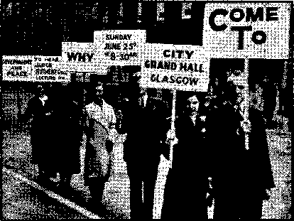

Contents
The Pope’s Responsibility for
“Even to. the Shedding of Blood”
Seventh World-Power Must Go Down
Turning the Tables in South Wales
Catholic-Fascist Menace in Britain
Catholic-Fascist Action in S. Wales
Will Chief Matthews Ever Learn?
Counsel by J. F. Rutherford
New Government
Another Boy-Scout Tin-Horn Veteran
British Comment
League of Nations Comforted Aggressors
Published every other Wednesday by WATCHTOWER BIBLE AND TRACT SOCIETY, INC.
117 Adams St., Brooklyn, N. Y„ U. S. A.
Editor Clayton J. Woodworth
Business Manager Nathan H. Knorr
Five Cents a Copy
?1 a year in the United States
11.25 to Canada and all other countries
NOTICE TO SUBSCRIBERS
Remittances: For your own safety, remit by postal or express money order. When coin or currency is lost in the ordinary mails, there Is no redress. Remittances from countries other than those named below may be made to the Brooklyn office, but only by International postal money order.
Receipt of a new or renewal subscription will bo acknowledged only when requested. Notice of Expiration is sent with the journal one month before subscription expires. Please renew promptly to avoid loss of copies. Send change of address direct to us rather than to the post office. Your request should reach us at least two weeks before the date of issue with which it Is to take effect. Send your old as well as the new address. Copies will not be forwarded by the post office to your new address unless extra postage is provided by you.
Published also in Afrikaans, Bohemian, Danish, Dutch, Finnish, French, German, Greek, Hungarian. Japanese, Norwegian, Polish, Portuguese. Spanish, Swedish, Ukrainian; also special Australian edition In English.
OFFICES FOR OTHER COUNTRIES
England 34 Craven Terrace, London, W. 2
Canada 40 Irwin Avenue, Toronto 5, Ontario Australia 7 Beresford Road, Strathfleld, N S W. South Africa 623 Boston House, Cape Town
Entered as second-class matter at Brooklyn, N. Y., under the Act of March 3, 1870.
Some Schoolboy Howlers
Hysterics are sloping letters.
Catarrh is a musical instrument, especially in Spain.
A cuckoo lays other birds’ eggs in its own nest and viva voce.
In Venice people travel in gorgonzolas.
Ali Baba means being away when the crime was committed.
A spa is where people drink bath water.
A casserole is a garment worn chiefly by curates.
A cypher is a bottle that squirts.
Coup de grace—a lawn mower.
Corps diplomatique—shamming dead.
Belle is the feminine of gong.
The British Constitution is a sound one, but on account of its insolent position it suffers from fogs.
A sculptor is a man who makes faces and busts.
Q. What are rabies and what would you do for them?
A. Rabies are Jewish priests. I would do nothing for them.
Name* of the Mules
A PGA official in lower South Carolina was visited by a Negro farmer who wished to borrow some money to make a crop. "How many mules have you?” asked the official as he began filling in the application blank. “Fo’; yassah, I’se got fo’,” the old darky replied. “What are their names?” asked the official. “Baptis, Meth’dis, Presbytarin an’ Piscopa-lium,” said the Negro. “Why, that’s a new idea,” said the official; “why did you give them those names?”
“Well, suh, it’s dis way: Dat Baptis’ mule he jes likes to get in de creek an’ wade ’roun’, but when he gets out of de water, he won’t do nothin’. Dat Meth’dis mule, all he does is ter holler an’ holler, an’ den he don’t do nothin’. De Presbyterium mule, he’s so sot in his ways he never do nothin’ till he wants to anyway. An’ dat Piscopalium mule, he alius hold his haid an’ tail high, but he ain’t wurth er darn.” —Taken from a Farm Magazine.
For Papa’s Birthday
Wife: “It’s your birthday, George. I must run out and buy you something.”
Husband: "Well, take this half dollar. It’s all I can afford.”
“And in His name shall the nations hope.”—Matthew 12:21, A.R.V.
Volume XXI
Brooklyn, N. Y., Wednesday, November 15, 1939
Number 526
(In Three Parts—Part 3)
The Devil’s Real Objective
THE entire point of all that is occurring in Europe and elsewhere in the world is lost unless one sees the truth, which is that the Devil is frantic to stop the work of the
Kingdom of God in the earth, the Theocracy. One must see the truth regarding Jehovah’s purposes, as that truth has been made known by the Father, through the Son, and as now proclaimed by the Watchtower Bible and Tract Society and the faithful men and women, Jehovah’s witnesses and their companions, the Jonadabs, in every part of the earth.
There is nothing the Devil so much fears as truth. He has used religion to hide it, churchmen to misrepresent it, and governments to persecute it. He has done that in Germany since the advent of Hitler to power. To be sure, at the moment, some of Jehovah’s witnesses have been withdrawn from prisons and concentration camps to work on roads or perform other heavy labor in the present shortage of man-power in the Reich, but they arc hated none the less by the Devil, who seeks nothing short of their destruction. This can best be accomplished by the seizure of the entire world, and the placing of it under the control of the racket operating out of Vatican City.
By the way, of the 741 inhabitants of Vatican City 566 are Italians, 117 are Swiss, 31 were born on the premises, 11 are French, 11 are Germans, and there is 1 each from Belgium, Norway. Holland, Spain and Hungary. The Italians see to it that the care of this racket is kept closely in Italian hands.
None should get the idea that Hitler knew nothing about Jehovah’s witnesses until he and his gang muscled in and seized control of Germany. In the Wiener Neueste Nach-
NOVEMBER 15. 1939 richten, October 24, 1938, Walter Vogel wrote of his experiences on June 17, 1922, sixteen years previous. He is reminiscing of Hitler, and what he knew of him eleven years before he took the reins of government from the faltering hands of old Air. Hindenburg. He says:
I was privileged to sit with Adolph Hitler, after the meeting in the Sophiensaal, in the caf'6 (Cafe Rebhubn). Afterwards I accompanied the Fuehrer to the Hotel Hamerand in the Sth district, Floriani-gasse; of course, we walked, and I told him of our struggle in Vienna, of a broken-up meeting of the Bible Students and of other experiences during the time of struggle.
The Light That Never Flickers
It is good sometimes to read the opinions of men in far-off lands as to what is taking place in “Christendom”. Read, therefore, the kindly words of B. Stuart, published in the Natal (South Africa) Daily News of July 15, 1939. Mr. Stuart is speaking of the terrible sufferings of Jehovah’s witnesses in Germany, and of the witness they have given to the honor of God’s name in a dark age, a dark land and a dark hour. He says to the editor of the News:
In the Natal Daibi News of Thursday you publish an item dated from Berlin giving news of a "suppression without mercy” trial of several members of the “International Bible Searchers’ ” movement.
It might interest you to know that the correct English rendering of the name by which these German Christians are known is “The International Bible Students Association”, and that this association is the German branch of the world-wide “Watchtower” Bible and Tract Society.
It is not generally known that the “Bibelforsch-ers” constitute the sole obstacle within the old Reieh which Hitler has not been able to sweep from his path. Communists, Socialists, Left, Right and Center parties have vanished like morning mists before a summer sun. Organized religion is a
3
puppet of the State, and its ministers “heil” and goose-step with the fervency of conviction.
STEADFAST
But, like a light that never flickers, this little body of Christian men and women stand steadfast in their faith, a thorn in the side of the Monarch of Munich and a living testimony to his mortality. They have endured six years of the Hitlerian Hell. They have been killed. Two thousand of them have been consigned to a living death from which they have no hope in this world of returning. They have died at the triangle and on the rack of deliberate physical torture. Their tenacity and courage, and, above all, their sublime faith in the Bible and its author, have become proverbial throughout Germany.
The reasons for their persecution are threefold: They refuse to Heil Hitler. They refuse to take up arms. They insist on preaching the good news of the approach of the Kingdom of Christ and its righteousness, before which the struttings of the war-lords become the crowing of a cockerel on a dung-heap.
Conspiracy Against the Lord
—"sa The conspiracy in Germany and r throughout “Christendom” is a con-
spiraey against the King of kings ^r]\ 1 and against the Word of God, ■u. which liveth and abideth forever. It is because Jehovah’s witnesses are so faithful to both God and His Word that Hitler so hates them and has so abused them. Jehovah’s people, since the advent of this man to power, did what they could to encourage the people to turn to God and to His Word. Even this form of service was too much for Hitler and his “spiritual” guides, and they caused an order to be issued that Bibles may be placed on display only in religious book stores (get that word ‘‘religious’’), of which there are but few in Germany, and in all other book stores may be sold only when specifically ordered. See the terror of truth, how it strikes home to the heart of all tyrants. Hitler is afraid of the humble messengers of God’s kingdom.
The religionists welcome any king or any ruler except the Lord himself. In the Basle (Switzerland) Nazional Zeitung of April 1, 1937, their Berlin correspondent states the truth on this subject very well, though he certainly had no such intent:
One must not forget that the Protestant and the Catholic church have never opposed dictatorship as a form of government. On the contrary: must one be reminded that the Protestant clergy blessed swastika flags a long time before the seizure of power; that the Catholic church has never protested against the persecution of political opponents and against certain, now abolished, excesses of National Socialism, which were condemned in the whole world; that the pope and Mussolini agree well together and that the pope is supporting Franco financially and morally?
World-wide Opposition to witnesses
Says H. E. Coffey, of Texas:
Then' is evidently a deliberate plan or conspiracy among leaders and religionists throughout the world not to recognize Jehovah’s witnesses as being Christians.
World Outlook, a Methodist organ published at Nashville, Tenn., in its May (1939) number carries an editorial, “The Christian Church in a Hostile World,” which laments the spineless character of leaders and members of Protestant churches. In one paragraph is the following statement:
In Uermuny at leasl one man—Pastor Nierrmeller— has preferred (lie concent rat ion camp to prostitution of mind and spirit. But it is alarming that there has been only one. Other Christians have no cause to be proud that they have escaped the rod of the unspeakable Hitler.
Can it be that this editor is ignorant of the fact that thousands of sincere Christians have been and are being persecuted in Germany?
Hitler tells the world that there is “freedom of religion” in Germany. The Commonwealth, a monthly published at Osprey, Fla., by W. F. Burrows. M.D., gives an excerpt from the address of Adolph Hitler to the Reichstag on January 30, 1939, from which I quote:
. . . Among the ou.ciies against Germany raised today in so-enlled (sic) democracies is the assertion that National-Socialist. Germany is an an'i-rcligious state. [Jehovah's witnesses, though, fully understand that it is religious.] I therefore wish to make the following solemn declaration to the whole German nation:
"(1) No one in Germany has been persecuted for his religious views, nor will anyone be persecuted on that account!’’
'‘But: The National Socialist State will ruthlessly make clear to I hose clergy who, instead of being God’s ministers, regard it as their mission to speak insultingly of our present Reich, its organization, or its leaders; that no one will tolerate (sic) a destruction of this state, and that clergy who place themselves beyond the pale of the law will be called to account before the law like any other German citizen.”
In the same speech Hitler explains that “pederasty and sexual offenses against children” will be punished by the civil authorities, but he says: “It is no concern of ours if priests break their vows such as chastity.” Then he adds: “This State has only once interfered in the inner organization of the churches. This happened in 1933, when I myself attempted to unite the hopelessly disrupted Protestant Regional Churches in Germany into one large and powerful Evangelical Reich Church. The attempt failed owing to the opposition of some of the Regional bishops. In consequence, no further
efforts were made; after all, it is not our task to defend the Protestant Church or even to strengthen it by forceful means.”
Indeed, Hitler’s entire plan is to strengthen only the Roman Catholic Church in Germany. Another article in The Commonwealth, “The Church in the New Germany,” a reprint from “News from Germany”, shows how this is being done. Every encouragement is being given that organization, and a marked growth in membership and influence of the Catholic Church in Germany is the result. The German Government now taxes the people to support the churches. Hitler claims this is entirely a voluntary arrangement. He tells the people that at any time that the churches (he doubtless refers to the Catholic Church) request it, he is willing to do away with this arrangement and separate the churches from any connection with the state.
Skillfully disguised, propaganda is now being circulated and published in magazines and the press of America to bring American people around to the Nazi viewpoint. World Affairs for June, a quarterly published by the American Peace Society in Washington, D.C., has an editorial by its editor, Arthur Decrin Call, which is caveat to the thoughtful observers of world affairs. This pronouncement, “In Behalf of Good Will,” circulated under the auspices of the National Conference of Christians and Jews, and drafted by Professor A. II. Compton of the University of Chicago, Carlton Hays of Columbia University, and Roger W. Strauss, is an appeal to Americans to oppose all who are anti-Catholic, anti-Jew, anti-Communist, anti-Nazi, etc. In simple words, this declaration means that no one should think or speak against the fundamental teachings or the activities of any of the enemies of Jehovah God who are running amuek in the world today. The effect would be to keep the people in :gnorance and allow these foul institutions to spread and, finally, enslave the people. Under the guise of good will and noble ethical intentions, the pronouncement is a leader to put the people in an attitude and .frame of mind which will cause them to submit in the, course of events to enslavement. A onesided liberty is no liberty at all.
NOVEMBER 15, 1939
“Even to Shedding of Blood”
The statement of the “Most Reverend” J. 0. McGuigan to Enrico Cardinal Gaspar ri, at Midland, Ontario—
Come what may, we will preserve
the faith, even to the shedding of blood, for our children and our children’s children — may have been a reference to the act of fellow Catholics firing on Jehovah’s witnesses at St. . Laurent, on the island of Orleans, Wednesday, June 28, forty days previous. This willingness to preserve one’s own “faith” by murdering somebody else is an act of religion that Gasparri ought to know about. Of course, it is contrary to everything in the Bible, but neither McGuigan nor Gasparri accepts the Bible as authority for human conduct. They accept the teachings of the “Church”.
The only liberty in Quebec is the liberty to pay money to lying priests for misinformation about a place that does not exist— “P u r g a t o r y” The Montreal Standard has a column and a half about, the trip of the Kingdom II down the St, Lawrence river, from Montreal. Residents of the island of Orleans fired on the vestel. At LTsIet the witnesses were forbidden to land. Other reports follow:
Three reports covering the voyage of Witnesses, which read like a log of the fruitless journey of the “Kingdom II”, would imply that the evangelists were having just as difficult a trip as did the first missionaries who sailed up the same broad river several centuries ago.
These reports were wired to the British United Press by correspondents down the river. The first dated June 14, from Quebec, reads:
Three members of Jehovah’s witnesses traveling on the schooner “Kingdom 11” tried vainly to disembark al Quebec today. Police seized 50 records and a phonograph which was placed on the-bank of the St.'Charles river. Before arriving here the party waa 5
wkpMled from Sorel end Three Rivers. They got in port yesterday on board their sehooner and anchored. Police watched them all night and prevented their landing. This morning they found the records and the phonograph, which were to be used for propaganda, on the bank of the St. Charles river, and seized them. No arrests wore made. .
In answer to a query from the British United Press as to where the Witnesses came from and on what grounds police were refusing them permission to land the following reply was wired from Quebec the same day, June 14:
Party from Montreal. They were refused permission to land at Sorel last Friday and also at Three Rivers. They then stopped in the middle of the river at .Deschaillons, some twenty miles above Quebec, and arrived here yesterday afternoon. Police have no specific charge against them. They just seized the records and phonograph as pernicious literature and if the three men disembark they will be arrested and charged with creating a disorder. This afternoon the party is moving to Beauport and Provincial Police will also prevent them from disembarking there.
The third message, dated June 29, tells how the Witnesses were received with rifle shots at St. Laurent on the island of Orleans and how they were refused permission to land at L'lslet. It adds they were continuing their troubled but determined way down the river.
Seventh World-Power Must Go Down
The Seventh World-Power (Britain and America) must come to the disgrace of being swallowed up by the Totalitarian Monstrosity. Both nations deserve it well. The details have been published over and over again—the trips to Rome, the kneeling before the pope,* the sending of secret messages and private ambassadors, and the ignoring of the cry of Jehovah’s witnesses for justice in “the land of the free and the home of the brave”. In the ' face of 2,000 eases of imprisonment of Jehovah’s witnesses for telling the truth of God’s Word, the president-of the United States not only kowtows to the pope but sends messages of congratulation to bis representatives, and tells them to 'go to it; what the nation needs is more religion’. They threaten to murder anybody that disagrees with them, and yet, when a pope dies, the entire Congress of the United States, elected by the people, and paid handsomely for its services, wastes an entire day to grieve over the 'untimely’ death, at 81 years of age, of one of the most unprincipled murderers that ever Jived. [* See pp. 16-17.] United States Senator William E. Borah does not seem to think that either Uncle Sam or John Bull is entitled to much sympathy for what is certainly coming to them. He is on record as saying publicly:
What is the difference between the dictators and the democracies in Europe when questions touching international affairs are being considered; however it would, how could the United States distinguish in foreign affairs between the dictators and so-called democracies!
For illustration, what was the difference in policy between the dictators and democracies at Munich! Wherein did they differ in their foreign policy or principle! And we are not concerned with their internal policy, .
When the hour came for the dictators and the democracies to join in an international movement of stupendous moment, that is, to destroy, to literally murder, the one real democracy in Europe, what was the distinction in the principles applied by the dictators and the democracies!
. When it appeared to be in the interest of the dictators and the democracies to break treaties, to disregard all law, Itegal, moral or divine, all principles supposed to obtain among honorable and decent communities, what was the distinction!
In what respect did they differ! Did the dictators and the democracies disagree as to the fact they were willing to destroy a helpless nation f
Did they disagree as to how it was to Ijp done! Was there anything considered, by all or any of them, except purely selfish interests, brutal, criminal, selfish interests!
Did not tbe democracies, even at the suggestion of the dictators, go at midnight and serve notice on the president of the Republic of Czechoslovakia that the time had come for the dismemberment of this republic—a nation denied a hearing, denied the slightest opportunity for defense, to offer up its very existence and to do so in haste, as one of the messenger democracies had other matters which required its attention shortly!
Notice of God’s Purposes
Britain, now involved in another great war, has had due notice of God’s purposes. On July 7, 1939, J. Hemery, secretary of Watchtower Bible and Tract Society, sent the following notice to each member of the House of Lords. If they paid any attention to this lastminute warning, therh is no record of it here.
We beg to eall your attention and ask your earnest consideration to the two enclosures, one a copy of Consolation, the other a folder which calls attention to what is most certainly an important factor of our national welfare,
The publications call attention to the growing movement of Catholic Action in this country. It is admitted that some alliance obtains with Fascism. This movement is using violence and force to accomplish its ends. Its tactics and policies emanate from a foreign power in Rome and are against the best interests of the British people and their heritage of freedom. During the past few months Jehovah’s witnesses, who are law-abiding Christians in
New Brunswick (N, J.) Priesf Says Catholics Would Thus Stop Spread of “Errors.”
vI do not douH( IC they wore fttrcrtf enough, that the Catholic r^ople would hinder. even by death If necetsury. lite spread of h«retEe«| mor* amon* th* pecNe, uM I My rightly bo,”
Thig wb# the statement made by Che Kev. Hr. Harney, a Paullit Father lit BL Pater'* Roman Catholic Churoh, la Mew Brunswick, N. Friday evening. The Faullat Father! hay* br«n conducting * mission for tM laal three weeks tn that church, Lut Week tM aervieea ware for the bone At of &cn’Oathi> Jie*. 1
A feature cl Ibu week's lervkes wae k 1 question box." Thin nueition wa> read by Father Harney on Friday nightt— '
*40on the Catholic Chinrh regard Prat-eitanta as heretics, and doe* it not twliaee and teach that heretics should be punished, even with death If necessaryF’
Father Harney'a answer wib:~
*■ 1 n b way, I «ay yee, Certainly the Church dee* consider Protestants heretics, in a way. A formal heretic la cne who kpawa be u parverting the truths al God and the Catholic church. Ko man, by sinning himveiC •hould b« allowed to lead other* into sin. ’ - '*1 «Jq not doubt, if they were strong enough, that the Catholic people would hinder, even by death if necessary, the spread of iueh errors through the people. And 1 say, rightly so. 1
. jU human society protects Itself against' the murderer and the man who proves a (niter to tho government, so the Church of God baa the right to protect itself. The Catholic Church never dreamed of punishing cite who I* materially a heretic—one who believes thing* to ba true that ar* not true-any more than a father would punish bls. child who doe* wrong un in t ant tonally. The hiBtory of the church ha* been a history of toleration. „ _ ,
^’The c*lholies hare proved more tolerant than the Prata*torrid.”
In an interview last night, Father Harney tflaud. that hi* remark* on Friday evening* a* above quale J. were eorrtel. Hr aald they*' expressed hli petaonal convictions and were; jn aecc.rd wtlki (hoacof the Catholic. Ghurem New York Herald, May7,1901
Me-olottsn at ftornfc ujw ft. putt «t Six ftoUneu *opt *iu* Ml fcjrrw trlMiI Mitreljn «t Hie B-wn Catlallt £)ur4l ntb JWawIgn »t Qt *Wt el Wtaot dlr,
MttfoWrb, That the Home of Repreientatives of the United State, has learned with the profoundcit of sorrow and shock of the death of His HotlNtis Pore Pivs XI, supreme spiritual sovereign of the Roman Catholic Church and Sovereign of the State of Vatican City. It sympathizes with the millions of Roman Catholics throughout the world on the loss of this outstanding leader of Catholicism who effected superlative gains in his own religious endeavors, who exerted the most challenging and sincere efforts for world peace, who manifested the broadest tolerance toward all nations and creeds, and who pleaded for the protection of oppressed minorities; and be it further
Ktfinlbtb, That the President of the United States be requested to communicate this expression of sentiment to the Secretary of State at the Vatican, and that, as a mark of further respect to the memory of.Pope Pius, the House do now adjourn.
Attest:

Coaxing for re-establishment of the Inquisition—and sure to get it, too.
this and every country, have been the objects of a Catholic-Fascist oppression amounting to personal assault, damage to property, and breaking up of public Bible meetings, and by use of threats and boycotting it has forced cinema managers and others to deny Jehovah’s witnesses the, right of the freedom of assembly.
A brochure, Fascism or Freedom, in also submitted for your attention : it is the lecture the Catholic organization has taken upon itself to censor. Jehovah’s witnesses, who comprise the above So-NOVEMBER 15, 1939 ciety, are not participants in any political movement, but are solely servants of tie Most High God, Jehovah, and are seeking to advance the interests of Christ’s Kingdom.
Respectfully yours,
There now follow six documents of public interest and importance showing the treatment Jehovah’s witnesses were receiving in Britain just prior to the outbreak of hostilities. While these liberty-lovers were really
helping Britishers to maintain British democracy, the friends of Hitler and of the pope were doing all possible to close their mouths. No one can foresee the outcome, hut it is a thrilling situation, and now is the time to seek the salvation which cometh from Jehovah alone. The night seems to be settling down.
Turning the Tables in South Wales
On Sunday May 21, Catholic Action in the Ebbw Valley in South Wales, under the leadership of one “Rev. Father” George McDonagh, thought they scored a victory by forcing the superintendent of the “Celynen Ambulance Hall” to break his word and cancel the public meeting scheduled there by Jehovah’s witnesses. This whole affair was a highhanded dictatorial undertaking complete with threats of Catholic boycott in the typical Hierarchy manner. Having been denied the privilege of having their Bible meeting in the Newbridge hall Jehovah’s witnesses began to visit other halls in this town, and every one of them refused because of Catholic pressure. Not to be outdone, efforts were made to engage a hall in several of the other mining towns in this Ebbw Valley adjoining to Newbridge. Finally they succeeded in contracting for the Empire Cinema in Crumlin. The meeting was to be held on Sunday June 11, where Judge Rutherford’s famous anti-Fascist lecture was to be given for the benefit of the people. The manager of this theater was very agreeable. It was suggested to him that there would be a possibility of some Catholics’ putting pressure on him, and he replied, “I’ve no time for the Catholics. I know a lot about them and no one will influence me against this meeting. I rent you the theater for £3, and it’s immaterial what you say in the meeting. If you can get the consent of the Monmouthshire County Council to hold it, it’s O.K. with me. My word is my bond.” With this agreement and the proper application to the Monmouthshire County Council, permission was granted Jehovah’s witnesses to have this cinema opened for the Sunday.
On Tuesday June 6, six days before the lecture, A. Whit Aker, the manager of the Cinema, in excited rage informed representatives of Jehovah’s witnesses that he was breaking the contract. Catholic Action had paid him a visit and had spoken. He was in a fearful condition and refused to discuss the matter. He was giving in to the Catholics even though he himself was not a Catholic, saying that he had his home life to look after and also that his living was involved. He succumbed to Catholic pressure in spite of his previous boast of fairness and tolerance.
This flagrant violation of covenant'was immediately placed in the hands of the Society’s London solicitors for quick legal action. The solicitors gave him until June the 8th to change his mind, but he still refused. Thus it has become necessary to take legal steps against Mr. Whitaker for breach of contract, which may make him regret his bowing to the “old lady”. .
Jehovah’s witnesses were already undertaking the advertising of this important meeting when this frustration occurred. Not to be outdone by these Cat ho lie-Fascists, arrangements were made for all Jehovah’s witnesses from the neighboring companies in this Ebbw Valley to join together in a special attack on Crumlin on Saturday and Sunday of the scheduled meeting. Large placards in their “information marches” informed the people of the underhanded efforts of the Hierarchy in canceling this meeting. Announcement was made that this lecture would be held in the open air near to the Empire Cinema so that all the people could hear this important lecture which the Catholics were afraid of. The whole population in Crumlin and the neighboring small mining towns was thoroughly aroused. Eight hundred Welsh people turned out Sunday night and it took three soundcars to pump “Fascism or Freedom” out to these hungering people. The original theater could have seated only 200, but, with Catholic Action effectively assisting in advertising the issue, the tables were turned on them, and the people were told the truth.
♦ On Sunday April 23, pioneer Albert Bacon was witnessing to the people in miners’ row of houses in Stonefield Rd., Blantyre, and was accompanied by a young boy six years of age. The people were very courteous and appreciated our calling on them with the Kingdom message, They accepted the invitation to hear the reproduction of Judge Rutherford’s lecture “Fascism or Freedom”, which was being widely advertised in the: neighborhood of Blantyre. When Albert reached house No. 51 on Stonefield Rd., the following happened, and is described in his own words:'
“When the incident happened I was stand
ee N SOLATION
ing in the doorway inviting the gentleman of the house to come to hear the lecture, which invitation he accepted. At this precise moment I noticed from the corner of my eye a man coming across the road from the new housing scheme (I had not seen this man before). lie stood at the door for about a minute; I thought it was his intention to go into the house; my back was turned on the man (Thomas Murphy, of 43 Stonefield Rd.). However, he grabbed me by the back of my coat and pulled me out from the doorway, and in his so doing I knocked the young boy down. His words were to the effect that I must stop the work which Jehovah commands must be done. The Bible literature which was in my hands was knocked away, and it was his intention to punch or do bodily injury to me, and in preventing him from so doing I was justified. His wife came out and coaxed him away with almost unsuccessful tactics.”
The names and addresses of five witnesses were quickly taken and the matter was reported to the police.
On May 11 Thomas Murphy’s case came up for trial, and with the abundance of evidence he was quickly found guilty and fined 15/-. This will certainly teach zealous followers of Catholic priests to think twice before committing assault against Jehovah’s witnesses in the Blantyre district.
In view of the continued opposition from the Catholic Hierarchy in the forms of assaults, mob violence, and breaking up of public meetings, Judge Rutherford’s advice has been sought. Following is his advice, which has just been received from Brooklyn, on the matter of Catholic violence: (Quote)
We should expect these things now, because the truth is stirring up the Devil’s crowd, and the witnesses should be encouraged to go straight forward in the work without hesitancy, knowing that it, is the time when the testimony must be given find, when given, will Certainly stir up strife on the part of the enemy. My advice is that when you are going into a community where you expect trouble you first notify the police officers that you are coining and request that they have an officer near by to witness any attempted assaults and make arrests of the persons who do attempt to assault. The person who gives the witness might carry a strong walking stick and another publisher walk near him, he also carrying a strong walking stick. If any attempt is made to interfere, let one of them NOVEMBER 15, 1939 say to the disturbers: “Stand back; if you assault this man, who has done nothing to you, I will takifr a hand and use this cane to good advantage, and I will not hesitate to use it under such circumstances.” The idea that wc have to stand mute, and refuse to protect ourselves when assaulted by a wrongdoer, is entirely un-Scriptural. If the police want to do their duty they will have somebody present and break up these mobs. Otherwise mark some in such a way that they can be identified. Get the witnesses and take them into court and have a test case and determine whether or not there is any further freedom in Britain to proclaim the message of God’s kingdom.
Thus Judge Rutherford has plainly set forth our right as Christians to defend ourselves and the Kingdom interests against attacks from Jehovah’s enemies. See Exodus 22:2,3. Note the action Jesus took to safeguard the Kingdom interests, at John 2:15, Matthew 21 :12,13, and Mark 11:15,16.
On May 20 the zone servant for Glasgow and three other publishers were served with a complaint by the police wherein they were charged by two priests of Clydebank with having ‘caused a crowd of people to collect and did commit a breach of the peace on the Sunday of March 5’, This interesting ease came to trial on Wednesday June 7. The Society engaged a well-known lawyer in Glasgow to make the defense. On the same day the trial of Patrick McCrory, leader of a mob against Jehovah’s people on February 5, came before the judge for hearing. Enclosed find a brief report from the zone servant on these two trials.
This afternoon, after a trial lasting two hours, witnesses Bacon, Brown, Whiteford and myself were found “not guilty” by Judge Burns on the charge of disturbing the peace brought against us by the priests McEwan and Duffin of Clydebank. T wo priests appeared in court, one of which was the “Rev. Father” Dr. McEwan. Our solicitor endeavored to pave the way for us to give witness to our message, but the judge immediately stopped this, saying the charge involved an annoyance by sound. However, little bits came out which were in themselves a witness. It was interesting and almost comical when our solicitor in cross-examining Dr. McEwan produced the Catholic Bellarmine Society’s report titled “Judge Rutherford and the Witnesses of Jehovah” and asked the said “rev.” gentleman to read aloud the last paragraph,1 where it gives advice as to how- to treat Jehovah’s witnesses to ‘prevent them from becoming a nuisance’.
Poor old priest! You should have seen his face while reeding- that last paragraph. Out of his own mouth he was condemned. Our witnesses, in comparison with the Catholic witnesses, gave a good account of themselves; none contradicted the other. The priests had poor witnesses for their side, and once the prosecutor said to a Catholic witness, “'Is that what you were told to say’/’-' At another point the police sergeant made a statement and this was contradicted immediately after by his superior, the inspector. The prosecutor pounced on this and made much of the point. Thus after two hours the judge found us not guilty. The court was crowded out, principally by Jehovah’s witnesses; and what a showing! One hundred and twenty publishers attended. Then- the second case came up, when MeGrory was brought forward, found guilty of assailing Jehovah’s servants, and fined 30/- or 10 days in jail. And so the battle we have been fighting for the last five months came to an end with a victory which the Lord has given ua.
All the British witnesses rejoice with the Glasgow publishers in these preliminary victories over Jehovah’s enemies and pray the Lord will strengthen them to keep pressing forward the Kingdom fight.—Rescript of information to Jehovah’s Kingdom publishers of Britain, issued from London office of Watchtower Bible and Tract Society.
Catholic-Fascist Menace in Britain Fosters Violence—Denies Freedom of Speech
♦ At the start let this fact be clearly borne in mind: that this is not a cry for Jehovah’s witnesses, who have been the object of Catholic-Fascist violence and reproach during the past several months. Jehovah’s witnesses are neither Communists nor members of any political movement, but are wholly and uncompromisingly for Jehovah God’s kingdom. under Christ and, as such, are faithful Christians. If they die in the performance of duty Jehovah will preserve their eternal existence. Whether one lives or dies is relatively unimportant, because the Devil’s agents can only kill the body but are unable to destroy ■ the right to life. (Luke 12:4) Jehovah’s witnesses trust in the Lord and need nothirfg from any man. But the purpose here is to warn the people of good will that if they continue to uphold and support an organization that is fighting against God’s kingdom they will suffer the consequences of its destruction.
PUBIJC WARNING
On September 11, 1938, at the Royal Albert Hall, London, Judge Rutherford, spokesman for Jehovah’s witnesses, sounded a timely warning, Which message was transmitted by wireless to the English-speaking people throughout the earth. In brief that warning was this: Vatican City, directing its Hierarchy throughout the world and acting in conjunction with Fascists and Nazis, is in a conspiracy to grab control of and rule the world, regiment the people, and dictate arbitrarily to all. In recent months the development of the physical facts in Britain have shown not only that the warning was timely, but that the predicted events are coming to pass much quicker than many anticipated.
CATHOLIC HIERARCHY SECRETLY
ADMITS FASCIST ALLIANCE '
During recent months the Catholic Press and other-Catholic agencies have secretly admitted their close association with Fascist interests and their move for power in Britain. But The Bellarmine Society (Catholic), Hey-throp College, in April, 1939, published a lengthy work entitled “Judge Rutherford and the Witnesses of Jehovah”, where they privately make the following significant statement: “Many non-Catholies would agree with Rutherford on a number of points, and eVen some Catholics who have succumbed to Leftwing propaganda will agree that he (Judge Rutherford) is not far wrong in saying that the Church is in alliance with Fascism. Criticisms of Rutherford, therefore, have to be so expressed that no handle is given to Communists, etc. For Communists would be quite ready to ignore, for the moment, the fact that Rutherford regards Communism itself as a child of the Devil, However, if these difficulties are kept well in mind, good work can be done by showing up Rutherford’s fundamental opposition to religion and to constituted authority.”
Of course, Jehovah’s witnesses openly admit their opposition to hypocritical practices of religion which are out of harmony with God’s Word, the Bible, but they deny that they are in opposition to the constituted authority of any state. Definitely they are not Communists. But does not the above statement plainly show that members of the Catholic Hierarchy are the ones who are in opposition to constituted authority by admitting they are in alliance with Fascism and thus against demoeraeyl
For further facts we refer to the Catholic Herald in an article published February 5, 1937: (Quote) “Hope for Fascism. Here we
T» Th PkjJ* af 3ouHj Wb!mi
Catholic-Fascist Action in S. Wales
Rev. Fr. McDonagh Dictated to a Local Committee
rpjJE Britiik -pwpk tore itrugtetd fM- e/DluHca to pin far itawhfc ]ib*riy *i«d tto rigM ft* aCkirdiTldu*! to«am Aftaigfily' tad uwdiBt to tbe dictate gf hit own cotoctento.
Religion Inadpa, u^'tor with toi right *t ptguibto s^rubly, fewdvm cf epetc-H uid frecdaa' U4 pro* *re tbs fmiitoi al Bkitith Dvwtorevy which have baan •» deiHy Mf*y«arded tor', puenlMu. YU wdiy, duii* Ibi* Uorrn st world intonity, FaKrim—Aciib the aid of 1to Raum'. Cilbdii Hitrarchy—jhjrwbtn* all Mtiou ud out Qwti procku torltig* otf fre*dwt», Autctreti* rukn who prwid.’ cwwtb* doljiuHof ttaioteliterin State* glory in tho dtstruotiwi of pdividud Bbarly. MuMdiub bento that be hu redwd dimwtroey nd libferilwsi to th* attto «'■ ratiett, ™*P**.'‘ Hitler doeret-iwad to bw*t > M* tfrodtm* *ru a! vfolflu* and ppprawoa hare ehot-ked' Im w*rli Tb* .BcfMi pwpk hire c’mmrgd ;Wr horror and driaait, and jtoi'poM tbit thia eomtry ihaCt ml toUaw Uto laid of the fytanli at amtral KbMen, But Lt to mJ! for all liberty-h*isg pttpla to ba 4ta guard. Britain to not tatlhV ft** fi-ain, Nilu *hd h’pwixt K(ka, Th*«* h .a wrlioiffUiibd «wrerorid to "togtroy th* UiH ud nllgku Libcrttoa al Uw ptopla. Tito toonmnt bu made mm progrea during the pud -Mtth*.
NOT COMMUNISTS BUT PfiOCLAlWCRfi OF FREEDOM
JeAmhto wlbjaM tor* J» aw y**r*rtift*d th* peopto to brteg ttont tatortaailen lad ttlightnntoat art tha WjnL at uod, WifiiM) tuty putt to Itotn**!-™^ sad at ths erpenw of ttuehtto*. chart? *»<1 uwd*y. they fco.-frort dm to dtor wureyiog a ntotom or wn fort aftoL bsp* tt> Uiom wto duiN to. Tav ’toe rtcwMd Bible tetter** bta threading thto tomaga of Qw'i k&Mdua Md itoo wnidajl tubto pmtiuti (a terg* toto u4 oijtotrw ibmfhaut tto aobidiy intot tbne Vftel t&ami* *f God’i bUTf-WB* at* ppridy'filMUiatd, Their parj*iM in h dnag to ta wt» AUnlghly Qod by etoylng "Mia cvrainandrwrti tOpr*Mh,ibe papal from how to hvQto arid flu* to jktaca Their wBr* eepteHnkw tto wotahfp at 0*d ii (to node UmcrlM by 3to Word, the Bible.
Marky «od paopla *f Iha Ctolhdk »M Proterumt dwtontnUknu- rpprore <»f lb» goepd - message and are glad to hava Jehovab'i wiinMaw bring to to .Uum. The 10*** etonrjf other poUtieiuin of their flwk do aM approw. Ttk}' buraa gmtly iatiBnufbaMtiae tier peo0* aro (i/en Djiportuoity to know toe lipin, Etui -Ikcohm ths Crdto expmu their rtehzL . The totttk ahnu Lwr Lhf people an dattitd by tbe prlnti Mod clergy, *aij bow their nrftffiw? orRnoiu-tiou wiU be dptHtytd *1 Iha hudi of Almighty tad in Hu b&llle.at hrenacaddaD, now ataas M hMXl 5W to riidlMU* tow tlaa ntlgiou joruttat' hale hitmtht pnUure an, voile* bud phtnanltft to Intdcfate With J*Tto¥4h'*'Wttoam* jUlid (heir KprCt. ..The}1 ate uaoig Mod tgukw gE feOee pbd tfaj^oa to Maompliah ihafr pupate i ^ne* Catholw-Futuft) to artic*.,
CATHOUC ACTION OPERATES IN NEW0RJDGE. MON-
ft*Ahwdi*n Cdotpany.at Jrtorah^idinoaM engegod th*41 &ly>w Ambulante «t. Nrrbdrige* MoatncsUbtoirt, South Waka, » giva Judge Rutherfard'a- toutu tntbfMtbfc lavtm “ Fwfen w Freedom ” -an Swuley, Hap 31u, it $ 80 p-ou
-Thi nperurtendent Of .tot Amtraluur Brigade, with other* at .tor- eooimiUM, toajtd JebMkhl wltneato tint it wodld bt «Uto« Ml ri|M to - Chb LaeWrt Md Mtoad to hn thr •belt tor tow <xe»Wi, -,
JrJtMeh'a wkatocet Of cliu Welib diMrtet pvf red busy M ftatfdiy, Frltlv end Saturday aid distributed &.00U l*rJm inciting iha people of to aame anil hear toia iesjnrtent laetuM. Ttnir aoUud air wm kept buy ail d*y &Ubrday end flutidi* uitisurtcLng tola e*e&L On. Saturday ereniag tha'sound'ur led a aaodwlah pinch thnugii tot biMy nrttfc of Saw-bridge. Tdiu ttwta^b advortldng of the teoturt apparently edrrad ap the bdltenuea or tba ?orM CttlmilA-Fsalia UU) tbaf tuerwdetl jp Iol|ci30«t|ng to# anperinundtfit «/ ibe who critoJ a amaraiicea ufttbu en Bunday morning i* oaneider wbetoer toelr h*ll ehnM bw denied Jthdrabl wltoatoM. Al J.M p.tn. Sunday ton keel repnenlalire iweirfd a telegnm ' t^rougb tbe local polka to aay iAMt to* hill wit ouctUtd and didalkty dautd totm. for tb« mung pabUl uetin*.
A MH *al Mto^liidy Ctodt TTpM Wftaeretuy (who4 bad* e® 'to* Ualutday mvndng t»' a*eDTni that tba Rall would be aTlilebla tn toe Sunday Iftfrtag IrtpureJ Tha atdreCwpl infoiiTMd the rtpHtentatin of Jitartob witneiiit that a apaeiBl metiinr hod boro enllad 4a t^ Bunday morning for too oammLnee io rctwider hn objection by tht k*u CulwHe Aerio*i grnfi "Thia aCHlary adriacd to egabt .visit Iha ruperieiMjdcut, Mr. D-. WLUiemj, of T0 SpruigflUd, NewMdfi*, wbo wvbld to* torth Iba tecU. Up* * Mltll Hr. nied* |h* fpilowing Mato--
DtCTATOR HJJONACH MAKE! THREAT
• ."Qti Friday <r»iflg Hi*.wo«n>lH* mr* io'diwMit yflw lecture and Whether, you midi bald any-further'lootuM* Wa deudd Ihet'wa would grant poo on* Bundiy Maing but thaU 'wt wiiuid not onnt hay further lictarea In ytaw of what wu contained in Cha leaflet. | Follow-! iicg toil dwcneHM Iha iwnan CatboHr Prieat [Rev, ketoet fetrp MfChWugM t»M ms "'*^4 'lie eug^ntad that toil lecture thovld not bo held beoaue it ■** oppnew) to tha Ronun CatocJld ICJiurth.-' At» he-neniodad n* that toe Roman CrthoUd Church were lh» big ngwurtam of ttef rAmhutoiict'Brigade.' Further tool tb« toadied TnotntfMti.aC ttu Brigade w«r Caibolis and th wnW he 0 gmt kea Io too Brigadr if QntbolK wpport wM withdrawn [»tn ua Ac * rertU of tola Tint .we^ad g ewnltta* meetibg and dahidod kn'vieHr o( ti*W totop lo .tuaal {'eeitiba''*
' In wtiiet wot* tot munlttae weekly yielded w lb* preem* the krai Catholic' Adw*i' «mp «*d deutod Jebffvata 'a wihwtww the right of fnadtwn of ensrmbly and Io terre tied oramd-(ng t* Uw ifatilM toeir ocmhuh*, Many wgUtared etmg praleat OgatanC Uiie high hwfed-iCatoalre igtipn Are th* baaetf Christian people of &?nth Walee soLW to elk* iren eorb w llto fetbd^FheciK Rev. Ft MeDonegti to dlrtete to dw* u Io whet they are to Wr ar not to bear of Gadi Word the .Bibb r MeAy people eitna to toie hall mperttot Io hut Itiil in-partant Leatun wd w«to (nelly dimppaUM- &’«P* an Jtoiug tehen to give tbU IkMln la tbe bOnwe-cf tboae itoa rWtraJed to thio eantelled emably.
qFen statement
E»»7 f*r nrlrtdad paiwn abhM they Cctoolk ffrivLiupuwA «U af vwlooe wbito nth alaeutod aCKedlog to Rui teetito, Afai'lar aats bin rowitip wU»red h Clydibuk, Ulmttr, LMdoA ud 0U>La. Jadgo ftotoetfori a prim man for JalurTto'e wilaeoace, pointed out eleariy th cMjtoyei Albert Hall, LMdcn. Lait lejrtaenber ton in oppaitkn to tad1* Kingdom the Hrnl "h'u bfRgbt forth to* oat poral* rtel* cr-totalitarian govenuiwt ruled £y --rialbli and arbitney wlili tba Tkrnejr &ibdjo Ritrtrtoy a* *p1rl<ujl avtrkrd borttilit «utd Ui lime «hb nA m«A BJr MLilerand Muiwriini, The atnbrtkd of tills crowd 1* to rule Iha wrttd. There a w* ai AMMfnihfd ritort'<M U* (lari of ihiemtaa ewwd 10 grab mt*al wf Britato and Ar»*fLee aad swteaway al) th* libertine of Ibe poople. Tbe ROM AN GATftOLlC MfERARCtilf ia iotael a WolilireJ iruaiutkn bent on taking away tbe libertlee of tb» p*opk and raking arbitrarily under tbe.* eioah of triiglvL Fanatical Flaritt* md Nui dirtaWs,- *itb tha aid ud roaperUM tbel Xoman CaUAlie HierejrAy at Vetirtn City. •» cow wrecking mtiMoltil Uutape. Rub oueh gneet w«w Uee th* bm. £hall we bevi Faeciatrt CatonAktau, riant? tod tachf Of eball W* eabrae* Chrirt uid bu kingdom «oJ tHelv* true-ftwadom tod enrtuiing Ufet
• '■ Th^ ftota, with etblr eridanc* which caste ptodueed When derind, prove thal.tik worAilp d£ Aladchty God to. aaoordeaee. with the dktatoa af rouwicaue is no larger free in dketrirt*.
Ul| «MW Ttaj[.'pr*T» th» the Kmup Catholl* HUrir-toy of JttKCdictito will. It JMriUtt, pul to mkaee every [penow nr ttgenltaftcin that talk the Lttiih to tbe people trf end Knoerrilng; tad'e Wood tod Hk Klogdotti under Christ Jera. In its mtetnpu » mmM tod euppim tbs SingdOM mieiogi of JetwrVeh Dod.-ind to lxnjmsqrt,-ba*l Up and tjttfrrtj ilJ-ttoel tad;fttrilg ■to.Md W^t, It betnyi M>l<*toUH0Lt0laiitari*u utaAMr {Ttbcnght aad aaiica.-
• * ’Many hnMt Catfeoike to till* land end taring the ipwmalrtmt irid ebrtowi faadcf1 MHKof tbtto Catholic okrgynd leaden m now. tutidag .*«*/ lrTOfn that nLigto-priittoi) AtganlMew In ehame ud dkgut. They kre Hading rafaa* Ik Jalwnb God's Kingdom stgaalto-1
AU p*opl* wba bflM«a to Almighty God jJid Hie Werd riiould pnHttptly toraike thef
Bd HMM,.* d'.'M U. J1Koyil(.s wwsa,w;
For further rtfa-awf-uwe, dtrite
Ttw Wim TOW, M CrtHb.Trirtoct UMsR, WJ
tffwe wwwi T*waH>g*Ltowm>wx
catholic action operates in oldham
buring (want nrontiw iha UutlcolJt Hkruivhi' in Htitatfi Ilusl brail oi'gabistof Cafhotla Acijpi gcvdpe throughout ti>e country, C.tJkOhc Aclitat as ontoninod to OrriPbuy, Italy. Spato aud America operate* iu elou ha rum-tv stlLJi th* fasi'iet iuotcineiLU in llito* o&utMrin *ilb the pti> rxw of oppoatog all aflvrtj made to eidighieu iheb people of God's kingdom, tathiplto Acxiuft b tew following the same CodiM ht I ku* country, and is wring farto, vlolrnoe and aaaldt to ■ato iu dndb. They do not Mtoe forth *s *ao1 le>u*u to CuXndy dtoaclv ttie atebjccti on which Upy Sitogree with other moveitontii uud alJon the rtawrribWe people La dacid* for iiiecntrlvw U t* what the? diairt to belkl-a, but nsert to the autburitaliie CouJitnrian method of fore* to Mg' Upon Iha peopln ’heir pTOpugUuda uri|inaltog from a Foreign*pg^F Ui VtUota City.
Ob Sunday, Apiil 2nd, Jehavun's wiuieiatH tpuducJeiJ a Luga puldle tnogilng el tl* fo-OpeTatH* 11*11 Ln Oldlietn to hear Judge Euihen'urd'a fetuoe* miLi-faaeiil katuro autitad " kutBto or Freedonf-1J The CalluLiO Action group to Ukliudi to orgUrilad by tbs la&al prieeta pfo-ftotisti iu aympuChiet, took, it, upon lhema»l*« to md grtUipe of delegate to tUs" Mawbly uid Oad« an attempt to break Up this meeting *nd wuw ecuUWca,
4 PLANNED DISTURBANCES
Frier to the beginning of tiie medinc * man wu dutributinB Catbolu paraphUte hi tbe Mlrau« of tin ludl aS tho pttple ‘iKe going tots the moot tog, Iu rtfWad to lure Cm tte rotlU«ii rf Iha steward and W fUtoUy told by n polite ofiicer to more ariky from tiia cutmito •f tha Milding' Thia man later gained eotrafire info tbe ball and had a start to th* dfaur^A Mm Tera minute utttt Ibt leeLUrt tegM a W«nmm mriied forward to th* {dotCartn abHting -■Ugf-* end endeavoured to damage tbe tottd ipaakar amplifying Kaiptaeat with bn MrbreUs., Ou Of the atiordl iiiui)*ditt*ly prevented her irtSu dartfCrying (he Ljkld ipwkn and MSdrM h*r oat at th* buiWtog, Thia Btotucl to be the itgod tor merit otiten tbiOTgbcitit Iha h*u to begin add caulng a generat uproar. Three man h'*jdto iMtaeafled torribl/tb tob *Hm* by ths statreraa. Qm steward was hit oh th* toee by cue wha wu tj«ted beHcte he ntoMd toc »p the ptut. By this time ddan* nf people wm on their tost npwwiaff lbs dmrdl who were ittiovtog lb* dirtnrbect. After b tow minute ths shiiraiM of lie gnting woresdtl to Ullfllnj tb» audiMire tor a eottitiunos Of the Itrture. Those to cbargs of ths BMStmg artiM thg pobce at ones md lour polfte eenstables reported lor doty.
About haU sn tour Ater a croup of a dwn yMthe bwtaun Id and EO Tun of bg* triad' . 14 gain cnlnmre into lb* meeting alBimtog that Owy wislied to 44k questions,. O» of tbs M> ride stewards owburd One af ths ysuib* to Shy Itoi the priest bld Mnt itoui, Thil 0H* refused to lean ths hwl SulrcUte* of Ito building Until put Cnit by ths pallet sfiMM
EX-MAYOR LEADS FURTHER CATHOUCFA5C1ST EFFORT
Nearly St tbt Snd of Ito meeting Aldrtuien Jboio Btonnou. of Windsor Read, OldbiSk fsraier mavCW of OhLhun, toaded a frotlp of flftesu mm Mid gained entrants tolO the usemblf.' this group stmtetosd om of ths Shb Who bad been forcibly sj**t»d earlier in the atoMn. Jmaudklely one of the wotoen In tbe Budlibre lpr*ng up delightedly ud warmly Stock Aldarmn Shsnqaa'e toad, wto> appeared Tftttor atosbed at this roreptico U>d Obietly took • Mt. As Ito ported of Bibis qusttkno sad snswere »'M bnHlgta to a cL«k by the chairman oa tto jdatfortt, meat of the CatbsUe* to the audience got together around Alderman Shaftlito and buMD tu ring >Maa Calbolie aa&g, The ehalrauU *Jc*d for eiknee hill they conitooad to itog sadesUa* a ntdrenoB. InrtmetlCftS wtt* given tto police. Sergeant in otoxge who then pi* ended to break up this AbtUctonoe^nd ijcct the dislurbws from th* hall, ShaimDU, a number of the Dliitom Wateb CwmittH, *1 first refund lo go biM tbe pottes Sergeant instated to bare him alerted out of iba toil 11 well as Ito rihtTB He tbta Med the following Ulh*teMht-*onij to tto pdjes'BergeaJ'it, " I Mil remember ypa,” Thi* throat hu toau teeofdad and fully ante -Mutilated by witnsa, Thuh after the** mruy diiturbam which greatly annoyed tto abdiens* of nearly WO, tto toll wafi alearod by tto police without any damage, ahimfitfl ud Ms' g«MI *f fellow OaUiditeFfcC'iite should ba thoroughly ashamed of ttomKhaa fer taking th* tew totd their swib himd£ vfolarwg tto right oi peaceable Arwmbly. Tto palleo having faibsd to tab* further wlj<K. ttonftca has gttM unpunished, end for Ibis reuoa we bring the* Itotl to tto Otleutiott of all people ot goad wdi, Aarely » a membrf of th* Waktli CvMJiSllee, lb* nff purpOe* of which u to watch aud uiejnarct iho civic inlenwls of tto community, Bbauum ■hrtld tore aided tto tew In prototillng th* right of paanabla hreambly and weauilgsl fitti tittoua to abide by Odd tefcgutird such Dghtt,
have a new movement still in process of development and amenable to friendly contacts, with a social program already containing so many reforms advocated by the social encyclicals (of the popes) that its platform may be said to consist very largely of Catholic planks. . . . British-Fascism stands for the Corporate State, the social-economic system favored by Catholic Austria, Catholic Italy, Catholic Portugal and Catholic Spain. . . . Furthermore, through a reformed upper house, British Fascism invites the official co-operation of the Catholic Church to the end that the government may have guidance in this very matter.” Also we quote from the Catholic Herald of May 12, 1939, “Action! Action! Action! There is a growing sense that Catholicity in Great Britain is on the eve of great happenings.” Surely these statements cause people to gravely examine the present threatening position.
overt acts
Consider now some of the overt acts committed by the Catholic-Fascist movement where they have made public demonstrations of violence and gagging of freedom of speech in open violation of the law of the land.
PqMk SiAfamst To The Ptopl# of South W*2»:
Catholic-Fascist Action in S. Wales
Rev. Fr. McDonagh Dictates to a Local Committee
rpEE ft Irtish people have-struggl«l-fwcsnUUice to Skin for HjHnmLvtt librtfy and toe rrghl tar eath lriLLTidtitl to itrw Altnigflty'flijd n-rrarding to (he dictalEi of hll own Coh*Ciai«., IWiffiau utwJpn, togitlwr witfi l"b« righ1! at peaceaWa laser,iliiy, fftfidoir. af h pc or ft icrtd freed 0*1 «f t-lM PHO are thl tO'andathJhB of BsilStl Deauverkcy which hava 'tmart k :ic*rFy nfsghlrded for'. Srttiona. Yet today, during this iJturru of WoHd Lf.lar.ity, ]-'e*iii-ti^uilh 1hi: aid of ilia RrimetT
nlii -fhrwtftj *11 natfotn slid pur own precious 2ltC-(tdfcE Of freedom. AutMruti*
rulen wkuprtdidfl over th* destinies of the total i'arieli Stab* glory l:i thu dalroutisn of iuiiividual liberty. Mbsoliiil bdkatl thlt be has rkduokd dkJnWi'kcy sbd liberalism to '-hi Alate- or *' rnftip. wpw.'1 Hitler d<>wtiJ't-r’*#d to bouet; bj* itrwious arts of v-o:o«isc- &r.d opprewlur. bave vluxitcd' the Wttld. Th* Bfltlkb people Rave Qgjjiwetf tfnir hurJW ahd djWdst, arid pari™* 111 kt Uli* □jur.try tlitll not follow the Lead of tie tyrtmli tri otnitil Sktnpe. but It 1r well for th liberty, foviog people to b* on guard, iiritoln is nut lh;irs(y fr*e ?Knr. >'kji and i’wu.1 Mlion. Thir* I* a 'iv«U-orfiniRd Hiovetiritat m d^tray thi *nll md nUgjijui libc.-iia* oJ the pwjde. Thl* (Mrtniiut buk mado Mm* yrDgf&d dcrtog tbu put 'mallhs.
NOT COMMUNISTS BUT PROCLAIMERS OF FREEDOM
Jebstlii'i wiifllfci't bare for UHJ1 VUH vtidtod the y*opl» to brlAg than. Infarhik'.imn kdd <c.LghtfnjTuovt on the Word cj Cfod, ^TltbaOI Ally profit to thsmaalvra, anc til -h? expert* □( rauco tiai,. er-ergy andnuMiey, they go-fro^t dc-jt to door aonvsying * mrtoiiire »r «nfw tujM to those Whu d«uti' Lt. TUq ulsa tUIi reeurdtd Bible IsetUrte in ifiTOoJjrH* tkln JlL-ju,D« ci (Jfti1) Mtfdocs wd Ofi stnduol publtt rust luge (n Urf* h.jj khd nfoizxj Ibraiighudt Ih* rabblry whkea thne vital toattort *f Gcd’e^iup-MU im apeaiy' itlmuwd. Thrift porTowi tn ho doing is Lu kHYe Alrulgkty God by obeying Hi* dwuinandmensi topr*Mh,,l£ie giMpa! from hop** to hot** <r.d plert to Tli*lr wtlrt eOualJtuM the W Ort flip ot Q«t la Ihi nude iirtKtiM tay HL* W-atc, t« Dibli.
M*tiy good ]!Kpt* if tki Ca'Jidtle ahd Praitwiaiit donDirdr.tftlcriLk- kp^roTw of tbk gbipet • IftttSiftc end ere g'-fld to Jw*Jch.jvihb nitniOn* icing it le diem. TLn ti*it*t*. nler^y a nJ other jiolitie:&;n of their flMk do kwt approve Th*y ijeetirrii gently lv>tni**4 tuosme l|w peepla are given cipticrtuaiLy to fceuw the triilr:, and becume the mil; exptflTa their taekcl. . Til* trUtk a/.uwe taw thn pcapi" Rrt ^craivnrf by thr prttsls and clergy, and tiiw their ruligiuus orgr.niui-liou* will be deal rayed kt the han-da of Almighty God in nit hnttl* t>f Armageddon, miw ck>w b*u& •Tbirt i* «tdktic« tbit then nflejoni p^ruUs* hJVt bttvjrht 4tv pdie« Ind
praaettoto lo 5ntAtfcre wJ'A JehovaS'e-wllneMi afid llielr Vforit. .TLey me lwl-i* Notilpata o? iev*a ksd vitilMC* to IffomplUh UwJr pprpoui tana* (toihutq-FaMLani lb aril 1*3,
OTHOUC ACTION OPERATES IN NEWBRIDGE, MON.
OftrsyCh*ii <Mm]iany. nf JetLdrAh'a'wllnMM engaged till " Celydeh AillL'alonc* *} KtrWbrldgev Mc&rKuU'ihiir.Lre, Soirtlh WaJci, La giv* Jndje ‘Ru'.herldTd'i toauiji t^tun " faaclatTl or Fnsedilru " ub Efabdky, May S^H. at Q.3U p.tn,
The ettperintoddae*. of ,1ii* Am.bi;lir.rj: Brigade, vrith ntheii of Ui* • toblH-ttC*. bWartd JntHiTaii‘1 wltr.mb th.it it wiydld b* tiurie *11 righ*. w hold, thl* Lskton Ud «*A*d t* lei th*-। hell for thB ouwoo,
Jchir*b’| <lt£N*ei t>f thia WeLib district got rt*L buy «A Tirttkdiy, Friday u:nl Saturday and distributed 3.QCU kaflett irlviiicig '.ha peoylg of gncdwhl; to tome arid huur 1his ictjrorlah* Jaatohe. Their ku'J nd Olf WU kept bUy ill 8 kt U fit* > and Hundky kntiounrln^ thia event. Of' Satorr-tiy evening tou rirund ear led i e arid wish parade thrtjgh the buey ittstiB of N-fw. ■brjdg«. Thu ttobo'agfl *d*frti»lng flf the ludjjrt anrarmltiy lUlTed Up 'lie bit>riiui of Ifta loclt CalliaLld-FaJeLl'J Ind they sucrix^<4 in In11 m Idji tl ng lM liqparih'jndknt of the Brigade, who t'kito-l a aodmuttak toga Umi -uh Sbt,day ibtir Jung Ui de r whither (he; hg.ll etiauld bt denied Jehovah'* ‘yiUmM. At l.sC ]i.m. Bundiy the luta'I reprckenuUn needed a tolegrtn thruogt toe loeal pfije* to uy- Uut ton hall wm -oaDcuikd and duSAfivty dahitsl toe.u. foe tok ret Bicig pgliUo ttMtlng.
A 4411 w« cTttntodLi'teJy ssd* opes iXt'Bedrit'iiy iwka'Kiif t® th* Balurday uwmlnj r»' MiuTud that tor Rall wix-dd be kvailiblw fur toa Sunday enrtng lecture.) Tie HCrttuyt i:i le-i mod 'Jie reprwitakira ot JthPvali't wilnM-J* that a i)kciii1 cirieiing had L*cu eclled tui Uh H.in J,.y mnreidt for di* rammittoe to cirnMdtr in oujmiion by the lACil Cetoolif Aetiun group.' The auii-vtiry vlviaed 10 uftaJ'. vitii the roper inleiidc nt, Mr 11 WlI.lbciii, af T8 ^yrii.g&k'ldT Hvw'Mdij*, who vubl:L *el forib thl fKlS. Up di a »L*i1 b£r. y illiacu ntada thl folluWLn.g itkto*. n*nt j— _
DICTATOR McDONACH MAKES THREAT
■’ Qb F’.riday eraoitlg tho.-cemtiitlw. ul*t to dUru** your InftiJra »:ij wbethni. you ooald! Hold any ferthtr laotJrta, d mid rd that'We woul^ .grant yuu cdie ^UT-dey |v«nJng but tft|U
we -wpijd not grant any further Itt’.URk In flew 1/ whet wa? soritafoiaJ in the leaflet, f Follow-} 1u? til IB itiMMlAii theftorian Cilliolic Print (Rev. Fitter .aeonc* 1*14 a teriu
■He Riiggeuted (hal tSi* ject'Jrt *hou?d not be ?ield bnrJQft it »ak iifipcewl t-ti !hf Rrtnan Cathvfldj iCh'jyoh • • AJta ha rrtniciJeiJ U* tbit tho Tinman C»tb.i>Ue Chu»eh ware tie Ing lUPPCTtore fifths1 jAmbultl:W Brijida. .Xilrthir tout th* nwtoal Inafructon Of th a lirigade wet-e Catholiffl gtt4 ht wchild b* a great ItM to the Srigedkrif Gkthulir HuppCrt'wit witodriwn from ua. Al k rtkUli of toil ri*il.*e>ad * nraadltetnaHtog IM1 dktldld IO view c-t tbrM thiiigl tu.rincll yottf
I'MtiUV'
1 Id'rt Ils* word* lb* committee irtakly. yield kd to O* p mi lire M the l&rel Cathniie Aetidlk WrtPJp »nd itonied Jehorah'i willtowthr right of freedom of aianubiy and to srwro trod eoocod-dig to iht dictitok 4f toelr ctfueietiw. Many regHLarcd etraag pntMt ogilnrt tbl> high tiwdod-(Cftthntie Aeti-uh. Art thf bonefl ClftrirtiaJl ptOLilti of Sjuth Wul« Roing Jo elluw Sieu rich U-^b* Cith-alle-PTU^it R«v. » MaDmafH to dlrtitr to tora aa io whkt they uw !a ‘hear or not to hear of C-nrf'i Wotd the E.bleT Mxhy iteip'-e el fl'.B '0 Ihii hall a Xpert I Tig to bkW thia Iftl-purtsnt lector* Uli wsr* frtatly diakpjMBted- btrpe irthaing tweo fo give thl* iMittn ip til* hcuiH-of toue who reipcnded, to tola tire a. led Bwcnbiy.
open STATEMENT
Eviry foie minded penen kfalwira tb^ Cktoril* Rrjcftioapirsd sell of tvclwire wbi-t± *rs ebkcotod bobrdiog to Hui tirtita. utk hi'i went'iy wurrkd In Clydibibk, Lkiwittt,
LmdJn Ind OldhlBL Judgt Rutherford, apekMiWi lor Jnhii-rak'e witotMn, puinfod out c.early Il Mw^leykl AJbkrt KtJI, L^ufan, last Sept*BibET 1bkt in rp|4ttiuh to Crvl'l K.r.gdcni Ite :}-rriL "ku bretpht forth thi ocruorsti atala-or totalitarian rj-vetTniiCnt ruled by visible aod e-rl'i Lriry kjst. with lb* Roiftkn Caiwfo KlertrcJiy kisplrlloal ovrrlurd workiflg h»hd iyi Etjovt vllh nwh rvi*ft BR Hiller end Mubwlini The ambition of this erowd is to ible Lh* WOtli, There is haw *i ■diUrtnitifd rifort as the part of toil uaa arawd io grab cmTriil art Britain and Arntrie* and .leJco eWiy all (hf liberties <if tl/e pwpk. RIl'SSAS CATHOI.TI? JftERARdiY il iu fact g ■pplitieei inatUltMl bent rwi taking away ih« lifawtirn a: tosjteaple Ihd ruling arbitrarily under thl' eloak <if religtoa. Fkttotiri! Fksciu ud Xui dleUtoTW, With thl kid and ro-opcrelirtt of Ilie'. Ionian Uktoflic Hierarchy It.Ykticito City, krt HOW wrtrIcing Ocrullaer.Lal E.ltdpr-. lUch cue^ Siust nOw tae* tba lul*. . Shill Vt h*v| rasciktit CkLtujIilrilH, llanfy Arid dkethf Or khkU wt euib’akk Chrut luid hia kingdom sad rwtL'r't trac £nedi:m and everlasting iifef » ' Thaw tie to With Stier evideii.ee which can'ba pMuitonl When, denliwd, prove tkst .the WCtkhlp
Almighty Qod to MWdasM wotli the dictate* ef ruoKiknce IB PS longer troe io district! 4u tbi| eoutitry. Tbx'prdrt that thl! ItoliLll'i pktholie Hllrar-zli;,- of JUHtdletlrit will, if pawl bl*, pat ta lilenrt every penov ar orgafouriiiri tliat tills the troth to thl peep 11 u[ li'.d Cfflrt rriing; Afcvf'i Ward Kd Ri* Kingdom unitor Chrlei Jceur. Li iu iitt'ripl-l to Mi>we and kupprua the' Kingdcm ■»■—g- pf Jefiovxh Oat, u.d Ln t’npriwjn.-bkct no ind uHierwika Lh-trri'- Ijod-ftsntg mu*od it briny* Iti iatakersn'., laCsbLaCiau IWiWl q*' thought and setWV. • •
' ■'Miriy hsr.M* Cathal Ire in Hito Land *r.d abroad, k«fog' the iuaowummt and obvious Taiii^ri1 Wine of tbarr -CaLhutie bluin' kud 1 sad era kre flaw eurping auiy Ifflr. tlllt religio-ptiLitiitol ffTginIUtiad bt iharhe add lliagul. They ire flltjlng iifug*lft jrltovah tiod'a iLtagdun STtuikt^' Ikton.' ALL pfeuple wlu bglieVl to ALlc.ifihtJ1 Gi<i jJld £Ii* ’ft'Ctd khould fftiniptiy fonoku ih&f Mrittd- sgmiUItoti *ad Uw adtolng da «itb It ' '__ .
JSHQYAJi’d
•For foriker fflfat-Htf/tow. iflnTk
TlW Wltfh TMtof, 3* CtXVkla.TkfTMk, W4
fywM M. flflMM «r Wk"'11 ’f'*» tv*,.**** WA
February 5, March 5, April 30, Clydebank, and April 2, Oldham. I See pages 9 and 11.]
April 30, 1939, Folkestone.—A party of forty members of Catholic Action came to the public meeting of Jehovah’s witnesses at the Town Hall and raised such a commotion that order was not restored until the police arrived.
May 7,1939, Hebburn-on-Tyne.—The local priest, “Father” Witty, brought pressure to bear and had the local public hall canceled to Jehovah’s witnesses a few hours before their advertised Bible meeting was to have started.
May 19,1939, Glasgow.—A party of twelve of Jehovah’s witnesses were seriously harassed and some injured in one of the largest of mobs gathered in the Garn gad Road district. It is estimated about two thousand Catholics participated in this demonstration of mass violence and assault. Eight of the mob were charged by the police and seven were finally brought before the magistrate and found guilty and punished for their violence.
May 21, 1939, Newbridge, Mon.—“Father” McDonagh openly threatened to boycott the management of the “Celynen Ambulance Hall” in respect to an agreement made to let the hall to Jehovah’s witnesses for their public Bible lecture. A few hours before the scheduled meeting the management weakly gave in to the threat and refused to allow' Jehovah’s witnesses to exercise their right of freedom of assembly. [See page 8.]
June 11, 1939, Crumlin, Mon.—This same “Father” McDonagh succeeded in having the management of the Empire Cinema, Crumlin, break his contract to allow a public Bible meeting, even though the local Watch Committee had already given its sanction. This second breach of contract is now the subject of action in the local court. “Father” McDonagh has evidently succeeded in setting up a censorship over that entire Welsh valley. By intimidation and boycott he has forced all other’ owners and managers of halls and cinemas in that section to refuse Jehovah’s witnesses to exercise their right of freedom of assembly.
During the past few weeks many other incidents of the same character have occurred in Dundee, North wich, Stirling, Leicester, Thor-naby, and Camberiey.
It must be said that much of this opposition has been as a result of Judge Rutherford’s famous anti-Faseist lecture “Fascism or Freedom”, which presents the bare facts and arguments the Catholic-Fascists have been unable to successfully refute. Instead of openly1 discussing this matter as gentlemen, they resort to force.
All this time the Catholic Herald and the Universe, principal organs of the Catholic Press in Britain, have been carrying on a bitter attack, and Jehovah’s witnesses have no doubt that such articles have encouraged further violence. For example, in the Universe of June 16, on page 10, the writer tells a brief storj' of how in Belfast one who Shouts “To hell with the pope” finds himself in the hospital within exactly ten minutes. Then he goes on to say that “Jehovah’s witnesses may not have used these precise words, but their language has been quite as provocative”. To many this might appear in a subtle manner as inciting to violence and maltreatment.
SHALL CATHOLIC-FASCIST ROME RULE BRITAIN?
The facts above are plainly stated, that all order-loving people of Great Britain who believe that the British people, and not Rome, should rule this country may know what is behind the scenes. The Catholic clergy and leaders pretending to be Christians are in fact religionists engaged in a subtle political campaign to control not only Germany, Italy and Spain and other countries of the Continent, but Great Britain and America. They and all their tactics are against true freedom.
The Fascist-Catholic Hierarchy must know that this is the land of Britain, and not Rome; that they may freely practice their religion here amongst those who like it; but that they cannot use their religious institution as a political machine to turn over to the fanatical dictators the liberties of the British people.
Bible prophecies clearly foretold these days, with violence on every hand within and without the nations. These are the last days, when Satan’s entire organization of world control is being maneuvered against God’s kingdom under Christ Jesus, which is now being established. Jehovah’s witnesses now encourage you to get a quick knowledge of God’s kingdom, so that you may find a place of safety and protection before the battle of Armageddon begins. Many honest Catholics in this land and abroad, seeing the obvious Fascist course of their Catholic clergy and leaders, are how turning away from that religib-political institution in shame and disgust. All people who believe in Almighty God and His Word should promptly forsake that wicked organization and have nothing more to do with it..
Jehovah’s witnesses, London,'
Will Chief Matthews Ever Learn?
FREE GOLDEN AGE No. 467, August 11, / 1937, told of the doings of Chief of Police J. E. Matthews, and his fellow anarchists, at La Grange, Georgia: how 76 prisoners were illegally transferred from the city to the county stockade; how the transport was illegally made at the speed of 65 miles an hour; how an innocent man was arrested and fined for doing the very thing he had been given a permit to do; how the chief plainly showed contempt of court; how he refused to arrest a fellow anarchist on a charge of assault and battery, and how he stated that if Jehovah’s witnesses ever came to La Grange again he would leave town after turning them over to a mob.
Chief Matthews’ word is no better than his official conduct. He stated the literature of Jehovah’s witnesses borders on the rankest kind of Communism, and, when offered $25 to produce one single legal proof of that statement, hung his head.
Chief Matthew's’ treatment of prisoners entitles him to be put in the same class with Hitler’s Gestapo. He put 56 men to sleep in a place where mattresses were so elose to the cowpen that urine splashed on their mattresses and on the men lying on them; the drainage from this eowpen passed down a ditch between the mattresses, not more than three feet away on either side.
LaGrange Chief And Two Others Are Hud in Crash
COaZTMBUS, Ga.. Otf, Three persons. including Chief cl Polled J. E. Mathews, of Lr-Crange, Ga., were treated at the City Hospital Friday for injuries resulting frtjjn an automobile collision near Buena Vista Thursday night.
Chief Mathew* iwstm ■ frec-lured pelvis and a.laceration over bis left eye. Also injured were his brother In law, J». J. Terry, of LaGranl*r who was reported in a critic) condition from internal Injuries and shock: and W. C. fiarbeY, of Jacksonville, Fla;. wM was cut and-suffered possible .in? tenjai injuries,____________________
Jehovah" Witness Winner on Appeal
A hoUceman may not arrest a person without a warrant milesf he sees a crime being commlttod, the Gcorjto Court pf Appeals ruled Thursday*
The decision reinstated a 31*000 damage suit filed by Victor Vlass, a Jehovah Witness, against C, E* McCrary and H, C. Newton, Allan* ta policeman, which had been decided in favor of tha policemen in Fultqn Superior Court,
. ViaiS* who said he worked la a restaurant and preacttedThe Gt>$-pei of the Kingdom of Jehovah God as a sideline, claimed be was ..walking along Techwood Drive with a satchel in his hand con< iaintaff pamphlets when arrested*
The-offleers contended that they nrrdbted VEess for peddling without a license, after complaints In jiha neighborhood.
The suit charged false arreat and faipriponmenl .
For further particulars see the above issue, a copy of which was put in every home in La Grange, and see the five biting cartoons that tell the story better than words.
Some of the La Grange officials learned something from the distribution of that magazine. One of them lost his job because of it, and all of them should have done so, including that blemish on the landscape who still pretends to be an officer of the law, whose injury is mentioned in the accompanying reproduction from the Atlanta Journal of O tober 13, 1939. It is interesting and significant that the
NOVEMBER 1B, 1839 next item in the same paper narrates a court decision in favor of Jehovah’s witnesses.
There is a story in 2 Kings 1:1-17 which Chief Matthews eould read with profit. King Ahaziah had met with an accident. He wanted to get well; but one of Jehovah’s witnesses, the prophet Elijah, sent word to him that he would die, and he did. Chief Matthews has been paying too much attention to the clergy, as did Ahaziah. The clergy of La Grange are a sad lot. They know nothing about the Word of God or about Christianity. When Jehovah’s witnesses were abused in their eity, not one of them lifted his voice in protest against all the lawlessness of Matthews and his brother anarchists.
Here is a sample of how much the La Grange clergy know. On Sunday, September 3, 1939, the “Reverend Doctor” Willis E. Howard, pastor of the First Baptist Church of Matthews’ eity is alleged to have said that “God is doing all that man will let him do” and “God doesn’t have a chance until he can find his own people”. What kind of god is that ? The answer is that that god is the Devil. It certainly is not the God of the Bible, Jehovah; for Jehovah says of himself:
Surely as I have thought, so shall it come to pass; and as I have purposed, so shall it stand . , . This is the purpose that is purposed upon the whole earth; and this is the hand that is: stretched out upon all the nations. For [Jehovah] of hosts hath purposed, and who shall disannul it V and his hand is stretched out, and who shall turn it back?—Isaiah 14:24-27.
Matthews has been trying to curry favor by flirting with the false god, the Devil. In so doing he has been sinning against his own soul. The only chance he has, or that anybody has, is to get over on the side of the true God, the God of the Bible, Jehovah, the Creator. He may recover, and he may not. Armageddon will settle Chief Matthews’ account, anyway.
13
THOUGH women in general have been discriminated against and exploited through limitation of their opportunities for employment,. through long hours, low wages, and harmful working conditions, such hardships have fallen upon Negro women with double harshness.
In a study of laundries by the Women’s Bureau in 1935, Bureau agents were told again and again that commercial laundries, especially in the South, were having a terrific struggle to compete with Negro washwomen. The following comments made by laundry employers, employment office officials, and other informed persons illustrate conditions then:
Since the depression, servants are required to do laundry as well as maid work; most of them get only $3 a week on the average. Greatest competition is colored washwomen. Will take a 30-pound bundle for a dollar. Some of them do a week’s washing for 50 cents. The washwoman charges only 60 to 75 percent of what the laundry charges for the same size bundle. The manager knew of a number of washwomen who were glad to get a day’s work for earfare, lunch, and an old dress.
Long as may be the hours of the Negro domestic worker, low as may be her earnings and those of the Negro woman in laundry, hotel, or restaurant, in general the economic status of these workers is much more favorable than that of the Negro woman agricultural laborer. One of these testified as follows:
And clothing isn’t in it. Since they stopped using fertilizer the clothes are very scanty, because we could take fertilizer sacks and make aprons and dresses for the little children. But since they are not using fertilizer very much you just can’t hide their nakedness through the winter. Sometimes you find in some of the houses that the little children are barefooted, and the children in some of the houses couldn’t go to school in the winter because they did not have clothes to go in. And some of them haven’t even got houses to stay in as good as lots of common barns. And some families of 12 or 14 live in houses with maybe one room and kitchen, with maybe three beds where 10 or 12 are sleeping in the three beds, and the kitehen is so open that you can just pass by and look through and see them all sitting in there, and not even have a flue for the stove pipe to go in, and the stove is setting oat in the floor. And maybe they have two joints of a stove-pipe, and maybe one piece of elbow, and when you start a fire you will get smoke all over the house until it gets started burning good, and you have to stay outside until it starts burning good because it smokes you out. Families have to put up with all kinds of things like that.
Tenancy in the Old South is the successor to the slave system. Both institutions were, in different ways, devices for holding on the land, on a subsistence basis, sufficient labor.to meet the maximum seasonal requirements of agriculture. As a result, the Southeast is now drenched with labor and is therefore especially vulnerable to all forces which may cause the displacement of workers.—U. S. Department of Labor.
International Murderers Embarrassed
International Murderers were embarrassed when the S.S. Titanian left Baltimore with war materials for Bilbao, Spain, and had to sail without its Norwegian crew. The crew were not in favor of watching over war materials intended to complete the destruction of the Spanish Republic, and so went on strike. They preferred to be without jobs rather than to take wages from the International Murder->ers who were engaged in backing Franco.
♦ Officials of the Farm Security Administration estimate that as a result of increasing mechanization of agriculture, and governmental crop adjustment programs, more than 500,000 rural families were drifting about last winter, in the bitter cold, searching for a place where they might get a little work, and with no conveniences or comforts of any ■kind. Fine civilization, isn’t it?
Factory Workers in Totalitarian States W7 A factory worker in the United States can buy four times as much food and clothing with an hour’s wages as a German worker, nine times as much as an Italian worker, and nearly twelve times as much as a Russian worker. On the whole it does not look as if the worker in the totalitarian state had such a happy time of it, after all.
600,000 New Workers a Year
♦ Every year in the United States there are 600,000 new workers added to the list, with the result that, even with 4,500,000 working on WPA and other Federal and local emergency aid programs, there are still about 6,000,000 that would like to work but can find no jobs at all. 1
It seems that New York is hard up for judges. First Manton quit under fire and was convicted under indictments charging him with taking bribes and conspiracy; and
within five months Supreme Court Justice Edgar J. Lauer resigned under fire, with his wife serving a three-month jail term for smuggling and hubby supposedly having known all about wifey’s misconduct. In 1937 ' Judge Lauer executed a baggage declaration listing merchandise “of only $220” for himself and wife, and afterwards jewelry and clothing were seized in his apartments which cost himself and his wife $10,400 in federal penalties, and a year later the customs agents were denied access to a room in which they found $1,800 in smuggled goods. Such a judge might be all right in a dog show, but certainly not elsewhere.
♦ In order to get the rank and file of the American people down to the proper level, where they will “Heil Hitler”, kiss rings and dead feet, salute flags and be all-round totalitarian subjects, Big Business, as represented by the New York World’s Fair, posted handsome pictures of Whalen, Boone, McAneny, Flanigan, Pope, Buckner, Hagen, Patch, Gibson, Voorhees, Jorzick, Straus and Marrah in the locker room of employees so that they could snap to attention, elick their heels and bring their hands to their foreheads when these mighty ones of the World’s Fair organization pass by. And the employees do it, too. No “heil”, no job.
♦ Authorities in New York are investigating the charges of an up-state prisoner that there has been a sliding scale of prices in Brooklyn, before certain judges, by which it cost $1,500 to $3,500 to obtain a reduced sentence, and one gang had a kitty to pay for short terms to anybody that got caught. A somewhat similar system works well in Buffalo, where a judge recently dismissed a complaint against a man charged with second-degree larceny. When the defendant was brought into court the warrant was eight years old, and there was no complainant who knew about the matter.
NOVEMBER 15, 1639
♦ At Rochester, N.Y., a chiropractor lost a job. This was the way of it, A man by the name of John Grela went blind. Three weeks later he had an automobile accident which gave him just enough of a bump to throw back into place the vertebra whose misplacement had caused his trouble. You would have to laugh to see how the newspapers dodged this reason- ‘ able explanation. His “physician” was reported to have said that “it was possible the shook of the accident had corrected whatever condition caused the blindness”. The physician was dead right, and it was too bad he did not know something about it in the first place, or that some chiropractor did not get the case, so that the young man could have had the gift of vision during the three weeks in which, instead, he was blind. AU that was necessary in this case was a single adjustment which any chiropractor or osteopath could easily give.
♦ The New York World’s Fair cost $150,000,000, occupies 1,216 acres, or a little less than two square miles, has a 280-acre amusement park, a tower 800 feet high, and a vast globe. Inside the globe are two platforms turning at the rate of 60 feet a minute which make a complete revolution every six minutes. In these six minutes the spectators see a vast model of the city of the future; 8,000 persons can see it in one hour. The General Motors ' exhibit carries the spectator a third of a mile on a moving chair, during which time he gets the impression that he is traveling along the American roads of the future. New York was figuring that each visitor to the city during the fair would spend about $80; and as this would apply to some sixty million people, it was thought the net returns would be adequate, but the show was not a financial success.
Slowly Awakening on the Flag Racket
♦ On the Stop-Hitler parade in New York three men started selling American flags, but were chased away by the paraders who said they would not buy Japanese-made American flags. Some Americans are slowly awakening to the fact that patriotism and the flag-waving racket are two separate and distinct things. Does flag-waving make patriots of the Bund, the Ku Kluxers and the Roman Hierarchy t
15
WITHIN many nations of the earth Jews are cruelly persecuted. Is there any good reason why any person should be persecuted merely because that person is a Jew? There is no just cause or excuse to persecute anyone. There is no reason or just excuse for the persecution of the Jews. Jehovah God is the Creator of the earth and He put man upon the earth. It is authoritatively written in His Word that “God . . . hath made of one blood all nations of men, for to divell on all the face of the earth”. (Acts 17:261 Furthermore Jehovah says: “I have made the earth, and created man upon it; I, even my hands, have stretched out the heavens, and all their host have I commanded.’’— Isaiah 45:12.
The Jews are the descendants of Jacob, a grandson of Abraham. Jacob’s name was changed by the Lord to Israel, and with the Israelites God made a covenant, thereby agreeing to give them special blessings if they would be obedient to Him. One of Israel’s sons was named Judah, which name means “praised”, and true Judeans are those who praise the Almighty God. The promise was given that from the tribe of Judah should come the Messiah, who should rule the world in righteousness and who in the Scriptures is designated ‘The Thon [mighty One] of the tribe of Judah; and to him shall the gathering of the people be.’ (Genesis 49:10; Revelation 5:5) God made the law covenant with the Jews for their oto protection until the coming of the Messiah. (Galatians 3 : 24) In due time Jesus came to the nation of the Jews, or Israelites, to teach them the truth, and God anointed Him the Messiah. The common people amongst the Jews believed Jesus, and received Him gladly; but their religious leaders rejected and persecuted Jesus.—Mark 12:37; 8:31; Luke 7:30.
The persecutors of Jesus were leaders of religion, that is, the Pharisees, doctors of the law, who taught the Jewish people. Jehovah God had caused IHs prophet to foretell that such persecution would come upon Jesus by that class of persons. (Isaiah 53:1-12). This fact explains the cause for the persecution of the Jews, and from what follows it will be seen that all persecution is induced by the Devil. The Almighty God gave Jerusalem to the Jews and put His name there, and therefore Jerusalem stood for the-name of Jehovah God. Long before that the Devil had declared that he could cause all men to curse God to His face. (Job 2:5) To accomplish his wicked purpose the Devil employed religion, that is, he induced the people to give adoration, praise and worship to demons and creatures and idols, and this he did in order to turn them away from Jehovah: God warned the Israelites that religion would be a snare that would bring them into great trouble and that hence they must worship Him alone and have nothing to do with idols or demons or any kind of religion. (Deuteronomy 7:1-16; Exodus 20:1-5) The leaders of the Israelites, called “Pharisees” and “doctors”, indulged in the practice of religion, and instead of teaching the people the Word of God they taught them the traditions of men. By this means the people were brought into the snare of the Devil. Jesus told the Pharisees that by their religious teachings and practices they had made the Word of God of -none effect. Directing His words to the religious leaders He said: “Ye hypocrites I well did Esaias prophesy of you, saying, This people draweth nigh' unto me with their mouth, and honoureth me with their lips; but their heart is far from me. But in vain they do worship me, teaching for doctrines the commandments of men.”—Matthew 15:7-9.
From that time forward the Pharisees cruelly persecuted Jesus and His disciples, and to the Pharisees or religious leaders Jesus said: ‘Ye seek to kill me because I have told you the truth. . , . Why do ye not under-stand my speech ? even because ye cannot hear my word. Ye are of your father the devil, and the lusts of your father ye will do. He was a murderer from the beginning, and abode not in the truth, because there is no truth in him. When he speaketh a lie, he speaketh of his own; for he is a liar, and the father of it.’— John 8:40-44.
All the scriptures bearing on the point show that the Devil induced the persecution of Jesus and-also those who have followed Him, and which he did in order to turn them away from God. The nation of Israel, or Jews, is the only nation upon whom God ever bestowed His name; therefore the name Jews, or Israelites, is connected with the name of Jehovah God and all who are in any wise connected with Jehovah’s name are objects of persecution by the Devil and his agents. The Devil hates everyone whom God recognizes or favors. The religious leaders turned the nation against God, and for that reason the nation was cast away; and the Devil has ever since ’» taken advantage of this to heap trouble upon the Jews, and make it appear that Jehovah God cannot protect His own with whom He made a covenant.
Since the year 1914 the woes upon the peoples of the earth have greatly increased; and the reason is this, to wit: In that year Christ Jesus, the Messiah, was enthroned and sent forth to rule the world, while Satan was still in power, exercising his wicked power over - the nations. There quickly followed a war in heaven between the Devil and the Lord Jesus Christ, and the Devil and his angels Were cast down to the earth. (Revelation 12:1-9) The Devil knowing that his time is short until the final'battle at Armageddon, he has ever since attempted to turn all men against God and Christ in order to bring about the destruction of the people. He therefore increases the persecution upon all persons who are in any wise connected with the name of Jehovah. While it is true that the Jews as a nation have been east away, yet the Devil, by causing their persecution, expects to induce the people to believe that God cannot hold to himself those with whom he made a covenant.
The persecution of Christians has greatly increased since the World War because they are the servants of Jehovah God. In Germany Hitler hates the name of Jehovah, and he and his followers, acting by the spirit of the Devil, have persecuted Jehovah’s witnesses and the Jews who once bore the name of Jehovah. This is clearly in fulfillment of the scripture, which reads: “Woe to the inhabiters of the earth, and of the sea! for the devil is come down unto you, having great wrath, because he knoweth that he hath but a short time.” —Revelation 12:12.
Christians are those who love Jehovah God, and who follow the lead of Christ Jesus in serving God and in doing good to others. Christians never persecute anyone. All persecution is prompted by the Devil. Those who are controlled by the spirit of the Devil indulge in persecuting others who try to do right, and the Devil’s purpose is always to reproach the name of Almighty God. Those persons who practice religion and lead in religious matters indulge in the persecution of others; and this is further proof that religion is the product of the Devil.
The Jews suffer cruel persecution at the hands of those who practice religion of one kind or another. For instance, Hitler has his peculiar religion, which is clearly the product of the Devil. Christians in Germany and elsewhere in the earth suffer persecution at the hands of religionists because Christians serve God and publish His name and His kingdom. All persons who desire righteousness refuse to indulge in the persecution of others, regardless of what others may believe. While it is true that the Jews are not Christians, yet
because that nation and people once bore the name of Jehovah God, even though they were cast away as a nation, they are still the objects of tlie Devil’s hatred and he induces their persecution as a further reproach to the name of the Almighty God. No doubt many Jews do wrong, but that is no reason or excuse for their persecution. The present generation of Jews are in no wise responsible for what the Pharisees and others did nineteen centuries ago. Because of their name the Devil hates them and causes their cruel persecution.
■ Is there hope for the Jews, to find relief from wicked persecution and to enjoy peace ? If so, what is tlyit hope? This will be considered in the next issue of Consolation.
Few Earthquakes in United States
BK The world’s earthquake belt is eastfl ward through the Mediterranean, ■ Turkey, Persia, India and the £$> Netherlands East Indies to New ' Zealand; thence around the shores of the Pacific ocean, all the way up to Alaska and down to Cape Horn, with a loop around the Caribbean sea. This leaves only the eastern coast of America not subject to earthquake shocks. The famed San Francisco disaster cost but 452 lives, while 100,000 lives were lost at Messina, Italv, in 1908, 50.000 at Lisbon, Portugal, in 1755, 180,000 in China in 1920, and 143,807 in Japan in 1923. The most disastrous earthquake ever known cost 300,000 lives, in India, in 1737, but one in Japan, in 1703, cost 200,000 lives. The natural place for great earthquakes is where steep mountain chains adjoin great ocean depths. Naturally, the shores are unstable.
♦ The Creator is always disclosing some new wonder in the heavens. A new star, 1-1939 Orionis, which can be seen only with telescopes, has a fan-like projection of light extending out of one side. This is supposed to be the result of a volcanic eruption on the star. 1-1939 Orionis is now 3,600 times as bright as it was four years ago. At least that is the way it seems; but the explosion no doubt took place many centuries ago and the light is only now reaching the little speck on which humanity resides.
♦ There is a big rise in real estate in Choctaw county, Oklahoma. Near Hugo parts of a sixtyacre meadow rose in places as high as six feet. The rise is supposed to be due to natural gas, and not to the hot air that usually causes land booms.
18
♦ Monday, March 6, was moving day in California. It may not have been for housewives and their hubbies, but it was for mountains. On that date a mountain quarter of a mile wide and 125 feet deep, near Gilroya, decided it had stayed long enough in one location and started to go out to see the world. -In the next five days it had navigated a mile and a half, and was still moving. The California highway department can take a joke from a mountain as well as any highway department anywhere, but it was offended when this young colossus threatened to close up California highway Number 191. There was no earthquake to start this mountain moving, f It was only just an illustration of California mountain temperament.
♦ It came last night and, while I slept, across my bedroom window' crept; and there I found at early morn were waving grasses, fields of com, frorids of ferns and flowers rare, with trailing wisps of maiden’s hair: all were pictured there so plain, upon my bedroom window pane, and out upon the lawn, for me, on every twig of bush and tree, were strings of sparkling jewels grand, stretched far away across the land. No human hand could ever take the honor such a scene to make, and spread its beauty o’er the way, to greet me at the break of day. I gaze in awe, then close my eyes, and whisper low, e’er 1 arise, to thank Jehovah, up above, who gives us beauty, peace and love.—Grace C. Hall, Illinois.
♦ Lightning struck and killed a telegraph messenger lad at Montreal, Canada, and printed upon his body were perfect imprints of ferns and leaves, probably photographs of near-by growths.
consolation
Three quarts potato water or milk, 6 tablespoons brown sugar, 6 teaspoons salt, 1 yeast cake, 2 tablespoons melted lard, 6 quarts wholewheat flour, 2 quarts white flour.
To the lukewarm potato water add the brown sugar, salt and yeast. Then add the white flour, then the melted lard, then the whole-wheat flour. Knead into loaves, let rise until double in bulk; then knead down and let rise again, but not as high; then knead and put in pans, let rise about one inch from the tops of pans, and bake one hour. Makes 6 loaves and a pan of bread biscuits.—Airs. W. Mizener, New York.
Sterile Males May Have Children
♦ Time magazine shows that sterile fathers may have children through the implantation of the spermatozoa of medical students, fifteen of whom are already enlisted for the purpose. This method is used in the propagation of cattle, over long distances. The article explains that blonds, brunets, redheads, Jews, Catholics and Protestants are on the medical student list, and the young men are glad to get the $25 each for furnishing life to children whose mothers they never see, and which children are palmed off as the chij/lren of other men, the husbands of the women in question. A case is cited of one Chicago woman, who bore two artificially" conceived children and has the constant pleasure of hearing her friends say they look just like their father, when, as a matter of fact, she herself has never seen him, and' does not know who he is.
♦ Eighteen green tomatoes, 12 bananas, 3 lemons, 9 cups white sugar, 9 red peppers. Put all in a granite kettle (except the lemon juice) and let stand over night. In the morning add the lemon juice, cook until thick, and put in cans and seal.—Mrs. W. Mizener, New York.
To Dig a Hole Under a Sidewalk
♦ To dig a hole under a sidewalk, take the garden hose and attach to it a piece of pipe about ten feet long; turn on the water and start digging with the pipe, and before you know it you will be at the other side of the walk with your pipe.
NOVEMBER 1B, 1939
♦ It has been known for years that dull pupils are made bright by loving them and taking an interest in them. Something like this is taking place in the care of the insane at Columbus State Hospital. A play department has been opened, and is meeting with great success in teaching the patients to play. By way of illustration the following is told:
Take the fellow who hadn’t spoken for months, just sat and stared at the ground, wouldn’t even say “yes” or “no”. Under the old system he would just have been left alone till the end of his days.
But Miss Lehmann came along one day and put a ball in his hands. He let it roll off. She did the same thing every day for a week. The man never moved, except enough to drop the bail.
But about the eighth day he threw the ball away, angrily. On succeeding days he threw it farther, and more angrily. Then he threw it at Miss Lehmann. She caught it and threw it back. Erom there it developed into a game of catch.
Pretty soon she had him throwing it to other people. And before long she had him out playing regular baseball, running and throwing. He will be released now in a few weeks.—Ernie Pyle, in the New York World-Telegram.
♦ In putting on double blankets start with a single edge at the top or head of the bed; spread it down to the foot; tuck the double edge under the mattress, so it will stay tucked, and bring the other single edge again toward the head of the bed as far as it may go. A correspondent says this is very important, so as to prevent the persecution of little children and others; and he is right. Nobody is helped by excess coverings. The feet should be kept covered ; the upper part of the body needs less heat; during the night, as the bodily temperature sinks, it sometimes feels good to draw up an extra cover from the foot of the bed, but if the body is warm to the hips it is usually comfortable all over.
Home Treatment for Appendicitis
♦ Enema of twro quarts warm water injected every hour for three, hours, followed one hour later with one quart of warm olive oil, retained overnight if possible, or otherwise as long as possible. This suggestion by a contributor is published with considerable confidence in its virtue. The use of enemas, however, can be overdone.
♦ Two dominies gained fame for themselves at High Point, N.C., in connection with an information mar eh field there by 107 of Jehovah’s witnesses. The march itself was a. grand witness for the Lord, The marchers, fifteen feet apart, made a line four blocks long.
'Tie ver end” Hugh Jones was displeased. Seeing the marchers he loudly addressed those about him, saying, among other things:
London, barrow advertising of Jehovah’s Kingdom
Look at those preachers there. They are dressed like they came out of a bandbox, clean on the outside but dirtier than hell on the inside. Look at that sign, “Religion is a snare and a racket.” That is a damned lie. Do you want me to spit on that? [This to a woman who held out the booklet Fascism or Freedom.] I’ll throw this rock through you. [This to a man in the line.]
His language became so foul that the police gathered him in, booked him on a charge of disorderly conduct, and he was taken to jail, The next day he was found guilty of the charge and was ordered to leave the city for a period of not less than five years. He was definitely found guilty of boisterous cursing and swearing.
“Reverend” G. W. Cooper, 609 Commonwealth Ave., also learned something. This is very hard for a “Reverend”; ordinarily they never learn anything at all. As the marchers went about their business in an orderly manner the “Reverend” drove slowly along yelling to mothers in the line with their children, “You mothers with your children: fine mothers you are. You are not fit to raise dogs, much less children.” To the men he shouted, “You are a bunch of grand rascals headed straight for hell.” To everyone he explained that he had a tent at Greensboro (fifteen miles away) and those who could should be there that night and he would explain how Judge Rutherford “has been getting away with his mess”, and that “there at the tent I will let God have his way”.
Several of the men among the witnesses went down to see about it. Just as they arrived a peculiar windstorm attacked the tent and tore it into ribbons. Recognizing some of the witnesses, “Reverend” Cooper stated, “We will beat those people if we have to do it with our fists.” Thereupon Jehovah’s witnesses had him arrested for disorderly conduct. He was given a suspended sentence, but told he must not do anything of the sort again or it would go hard with him. To raise the court costs, which were levied against him, he had to beg the money.
♦ We have been pioneering in and around Grenoble for some time now and are beginning to enjoy some of the fruits of our labors: a few people of good will are beginning to see the issue and are taking their stand. One of them handed us a local parish magazine recently which showed us that someone in the local blasphemy and lie factory was finding this fruit rather sour, so, to take the taste away, he delivered himself of the following’ in the Bulletin P&roixsine de St. Louis de Grenoble for the month of April:
Take Notice: La Tour.de Garde and the Works of Judge Rutherford. La Tour de Garde and Bible Students’ Society is offering from house to house numerous booklets, such as Supremacy, Face the Facts, Consolation. This sect, maliciously anti-Cathofie, is dealt with by Father Vincent de Moor, in his book Leur Combat [Their Fight], who analyzes, on pages 141-157, the Watchtower (Tour de Garde) movement.
(1) The Watchtower is a subversive movement. It condemns all existing authority, economic,, practical and religious. The movement does not pretend to organize revolution. It contents itself with announcing it, and attaching itself to the way ,of Jehovah, who henceforth leads the great fight. The pacific statements of the Watchtower people do not hinder them from engaging in every struggle supposedly for Jehovah.
(2) The Watchtower draws all its doctrines from the Bible. Therein lies a close affinity with Protestantism. Behind it is the same naive, fanatic obsession to be found in the Protestant sects. Moreover the official title of the Watchtower is International Bible Association Watch Tower and Tract Society, Brooklyn, New York. [This jewel Was in English exactly as given.]
(3) The Watchtower is not a religion, according to the leader of the movement himself, but a complete revolution toward an order of things which will transform the earth.
(4) The Watchtower since it does away with the spiritual destiny of humanity, Man’s goal is an EI Dorado altogether earthly. It thus connects up with the Koran, and constitutes a neoJudaism, prqpising the coming of a Messiah who will inaugurate the golden age on earth,
is not a religion either,
Glasgow, when information marches were current
Thismovementspreads its propaganda today throughout the entire world. Branches are established in a number of European and American capitals and particularly in Africa. [Note the trail of the serpent in these allu- ' >
sions to the African Watch Tower.] Even Protestant ministers recognize that it constitutes a very real danger for the church and civilization. Judge Rutherford’s teachings contain the seeds of the worst excesses.
A few remarks on this subject are necessary. The doctrinal works of the Watchtower condemn Communism and Bolshevism like the rest of Satan’s organization. Only the future Theocracy is legitimate. Textually the Biblical obsession of the Watchtower has nothing in common with Bolshevism itself. The Watchtower does not preach anarchy, but denounces evil and announces general destruction: the great evening is near. It follows that Bolshevism applauds the Watchtower movement.
Is there a positive collusion between the Bolshevist and Watchtower movements? There is no proof of it up to the present. Let it suffice to note that Rutherford is a Jew [A. beautiful, perfect, 100-percent lie.—Ed.] and his doctrines are a form of neo-Judaism. His works are printed by Jewish publishers, [Another 100-percenter.] An enormous capital is at the Watchtower’s disposal.
Following is a letter we and a local Jona-dab sent to. the big noise in charge of the magazine: /
NOVEMBER 16, 1930
Sir: Some people of your parish have put into our possession your BuHetiw Paroissine de St. Louis de Grenoble for the month of April, where we find an article on La Tour de Garde and the works of Judge Rutherford. Articles of this kind are not lacking in the Catholic press. Perhaps you have not heard of the Catholic Herald, of London, who published a report as false as yours, and who, finding themselves faced with a suit for damages, published a retraction and paid the legal costs incurred by their lack of love for the truth.
You have knowledge of at least three of the Watchtower publications. Why not cite them to prove your case directly, instead of relying on the opinion of a man who does not even know that the official title of the Watchtower is Watchtower Bible and Tract Society? Your author claims that the Watchtower announces revolution, but you give no proof of it, no more than he does, although you do say, “The Watchtower does not preach anarchy, but denounces evil.”
Why have you not more respect for the holiest name in the universe, the name of Jehovah? The answer is found in your fourth paragraph, that is to say, in the way you despise the Bible. Yes, indeed, “the Watchtower draws all its doctrines from the Bible.” This is more than you can say for your organization. Your reproach is a compliment.
The Bible teaches us that Jehovah is the only true God, that1 Christ is the legitimate King of all the earth (Psalm 110; Matthew 22:41-46) who will break up this world’s organization like a potter^ vessel. (Psalm 2:7-9) Why, then, do you speak of “the coming of a Messiah”, who, you know full well, is none other than Christ in glory? (Philippians 2: 9-11) Why do you speak in such veiled terms? It is because you know that if you tell the truth, that the Watchtower announces the return of that Christ, thrice dishonored by Judaism—during His earthly life, after His resurrection, and now at His return—your faithful will see how unfounded are your claims. It is because, like Annas and Caiaphas, you do not want the reign of Christ on earth, (Matthew 23:13) Like them, and the Protestant ministers of whom you speak, you see in Christ’s teachings “a very real danger”. Caiaphas said the same thing. (John 11:47-49) The danger is more “real” than you think it is. You see that He condemns all religion (Matthew 23), those who “for a pretense make
21
long prayers”, who use “vain repetitions” ((((1 Pater plus 5 Aves) times 10) plus 5 Glorias) times 20), those who turn the house o£ prayer into a den of thieves (Matthew 21:13), those who, inasmuch as they are friends of this world, are enemies of God.—James 4:4. '
The rest of your letter is pitiful. After, having said that “the Watchtower draws all its doctrines from the Bible” (which Communists and Bolshevists despise as much as you), that “the works of the Watchtower condemn Communism and Bolshevism”, that “only the future Theocracy is legitimate” (‘Thy kingdom come; thy will be done’; yes, you say it but you do not mean it), you then pretend that it follows (!!!) that “Bolshevism applauds the Watchtower movement”. Really, sir, you do not flatter the intelligence of your faithful.
Kingdom Hall, N. E. London
It is enough to read a few pages of the Watchtower’s literature to understand that it announces the presence of Christ, disowned by Judaism and dishonored by you and yours. Since the Watchtower publishes its own books it cannot be a question of “Jewish publishers”. As for the “enormous capital at the Watchtower’s disposal”, you can ill afford that remark, sir. Who has not visited your cathedrals or heard of your Vatican, with their riches of gold and silver and precious stones? Who is unaware of the life your “princes of the church” lead ? But how many think of the travail, the sweat, the weariness of mind and body of the poor who pay for them? (James 5:1-6) And you dare talk of capital. Then be it known to you, sir, that in this Satanic world, in spite of hypocritical religion, big business and bowelless politicians, there are unselfish people, real Christians. Not many, of course, as Paul says, ‘Not many wise after the flesh, not many mighty, not many noble, are called: but God has chosen the foolish things of the world, that He might put to shame them that are wise; and God has chosen the weak things of the world, that He might put to shame them that are strong; and the base things of the world, and the things that are despised, has God chosen, yea, and the things that are not (nobodies), that He might bring to nought the things that are.’ (1 Corinthians 1:26-28) Aye, Jehovah with this people docs a work that astonishes you; a strange work. (Isaiah 28 :14-22) It seems strange indeed to you that the Watchtower has such success, and so, judging everyone by yourselves, you say, “An enormous capital is at the Watchtower’s disposal.” But the capital at the Watchtower’s disposal is not of the metallic variety, so much 22
sought after by this world, but the boundless might of Jehovah God and His anointed, Christ Jesus. And that might has enabled the Watchtower to distribute 275,600,000 books in seventeen years, which free the people of good will from their spiritual prisons.—Isaiah 61:1,2,
These few lines are not written, as you would have folks understand, “maliciously,” neither to convince you, but that hereafter, and, above all, when Christ renders unto each one according to His own works, you ought not to be able to say, “I did not know.” God has sanctions to enforce against those who call evil good and good evil (Matthew 12:22-24; Isaiah 5:20), and you will take full responsibility for your words. Naturally, you could follow the Catholic Herald’s example; they retracted.
As intimated in the letter, its immediate effects on Satan’s “li’l darlings” is not our concern, but, apart from that, we are getting a kick out of the business when we show the article and reply to those who are beginning to see the light. Do they like it ? An interested young lady said that if they (the black-robed ones) did not reply they would be cowards. She was assured by us that there was no doubt of that in any case. It was a joy to see the gusto with which the local Jonadabs joined in sending the letter. —Two pioneers on the French front.
Another Boy-Scout Tin-Horn Veteran
Another boy-seout tin-horn veteran has been discovered. If he had kept his mouth shut nobody would have found it out, but in the flag-worship row at Fort Lee, N. J., T. G. Wragge, of Palisades Park, felt that the time had come to immortalize himself, so he busted into print for two columns in the Bergen Evening Record, telling vvhat a fine patriot he is, a war veteran, always ready to bow to Old Glory, etc., etc., and that Dan Morgan and his boys, Jehovah’s witnesses, should be deported. Then Dan wrote down to Washington, to the adjutant general’s office, of the War Department, and found that the 398th Field Artillery, with which Wragge was connected, was not organized until 1921, three years after the war was, over. Inasmuch as Wragge injected himself into this discussion, all will-be
Consolation amused at the following statement by himself of what he did in France in a regiment not organized until three years after the war:
A challenge was given me by Mr. Morgan about matching his war pecord, but far be it from me to burden you or your readers with a complete history of the 398th Field Artillery with which I served. I will say, however, for Mr. Morgan’s information, that we were not sent to France to throw cream puffs at each other.
♦ It is not an edifying spectacle to march three children of tender years off to what is to all intents and purposes a reform school because they haVe held steadfast to their religious principles. There is nothing to indicate that these youngsters or their parents are not, according to their own lights, God-fearing, decent Americans.
It strikes all of us as odd and somewhat sad, perhaps, that any Americans should refuse to cherish and to salute our flag. Nevertheless it is quite possible, even probable, that the Johnsons are patriotic. Those who are fervent enough in their religious convictions ■ to hold them in face of so much public condemnation are of the stuff that martyrs are made of, and deserve something better of this grand country of ours and theirs than jail.
The compulsory flag salute and the compulsory" teacher's oath are neither wise nor do they foster patriotism. They do, however, smack of Nazi Germany and Fascist Italy. And that isn’t good for either Massachusetts or the United States.—Springfield Union.
♦ Many years ago, before I knew anything of the truth, when the slogan '‘’Wilson kept us out of war” was so popular, I went, through curiosity, to hear Judge Rutherford speak at Poli’s theater in Washington. A thing in his talk that clung to me was a statement, emphasized with his fist on the table in front of
Back-call squad, San Antonio, Texas, Spanish company
NOVEMBER 15, 1B39 23
him, “America will go into the war: the Scriptures foretell it, and she cannot escape.” If he is as near correct this time as he was then, the “house-cleaning” time is not far off.— L. F, Dawson. ' •
(To be continued)
The Buddha god is very thin-vSH rO skinned. There is a statue to Bud-VOrljj dha Anuradhapura, in Ceylon, and in a lark a young girl sat in the i statue’s lap and was photographed
by her intended husband. It raised an awful row, and both young people were fined 45e each for defiling the statue. This was not enough, in some eyes, and when they went ’ away on their wedding trip somebody concealed a live cobra in the maid’s trunk, hoping it would kill her when the trunk was opened; but the cobra was killed instead. Despite the Biblical statement, “An idol is nothing in the world,” Buddha is supposed to have been defiled.
“Use Not Vain Repetitions”
♦ Christ Jesus, the Lord of life and glory, instructed against the use of prayer wheels and “Hail Marys” when He said, “When ye pray, use not vain repetitions, as the heathen do.” (Matthew 6:7) His instruction did not yet reach to the realm of the gaekwar of Baroda’s folks. They recently pulled off a yaga to the “fire god”, which lasted a month. On the final day they had 200,000 present, each one of whom, as a sort of return for two square meals, was supposed to repeat fifty times one particular Vedic verse praising the “fire god”. The priests on the job, no doubt, convinced all these poor dupes that the more “Hail Marys” they said, the better would be their harvests in the ensuing year. What a farce!
Skillfully Built Tunnels
♦ The natives of India are among the most skillful tunnel-builders in the world. For their irrigation works they commonly dig tunnels through the big hills, from one valley to another, and though they work from various openings, in both directions, they always meet * exactly at the proper point and at the proper grade. How this is done European engineers have yet to learn.
♦ Down in Travancore, India, at the tip of the Indian peninsula, and within a few miles of the equator, are 5,000,000 people, a fourth of whom call themselves Christians. These are the descendants of those to whom the apostle Thomas preached. When Roman Catholic missionaries arrived and began talking about the pope the people of Travancore did not know what they were talking about. They did not know there is such a person. Working hours in Travancore are from 7:30 in the morning until 12:30 in the afternoon. In the afternoon it is too hot to work.
The Cost of Illiteracy
♦ Ninety-two percent of the people of India can neither read nor write, but in Japan elementary education is free and compulsory, with the natural result that the Japanese standard of living is continuously rising, while India is repeatedly swept with disease, due to the fact that the women know so little of sanitation or anything else. Owing to the lack of education of the men the yield of the land is less than half what it is in England.
India Would Defend British Empire
♦ In mid-September, when it looked so much like another world war, ten Indian rulers sent telegrams to the viceroy of India in which they unreservedly placed all their forces at the disposal of the British Government, and that without regard to any domestic differences, big or little, which the Indian states have had or still have with the Government of India.
“Higher Powers” in Some Parts of India ♦ The bad landlords, as well as the good ones (who rule these little states in Orissa, Kathiawar, and elsewhere), are subject to no laws, they have the power of life and death, there are no obstacles to their greed, or lust, or cruelty, if they are greedy, vicious or cruel) —The Calcutta Statesman. '
Fifteen Billions in Gold
♦ The United States now has more than $15,000,000,000 in gold. William S. Wasserman, Philadelphia financier and economist, thinks it about time that Uncle Sam makes use of this gold to purchase raw material from the democratic countries now forced to barter with Germany and other t o t a 1 i t a r ian powers. He thinks, with good reason, too, that if the buying of gold by this country is continued long enough it will be— only a matter of time until the rest of the world will abandon gold entirely, and we will be left with metal altogether valueless save for an extremely limited use in industry and the arts.
S’ long, Deppy; you were useful while you lasted.
70,000 Items Needed to Equip an Army ♦ Louis Johnson, assistant secretary of war, states that there are 70,000 different items needed to equip a modern army; about 3,700 of these present special problems. Meantime 10,000 plants have been selected and furnished with definite schedules of war needs, and as soon as mobilization day comes the manufacture of munitions can begin at once. And from the looks of th? American stock market it can but be guessed that many of the 10,000 plants are . looking hopefully and expectantly . for War business. How else explain the sky-rocketing of stocks ?
♦ What would be your financial end if, in order to meet your current expenses, you had to borrow 39c every time you expended one dollar? That is the case with Uncle Sam. But his credit is still good, because he can levy on everything in the country. Moreover, only one person in twenty-five pays any income tax,
NOVEMBER 15, 1S39 and it is possible, in a Fascist state (and the United States is rapidly hastening to be such a state), to make every adult pay something out of his income directly to the state.
♦ In February, 1939, the Federal debt reached the new high of $39,798,893,142, and Uncle Sam’s stock of gold hit the new high of $14,700,000,000, with big shipments on the way. That was a bright idea Uncle Sam had of raising the price of gold. The natural result was that the South African gold output in 1938 was the greatest in history.
♦ America expended $20,500,000,000 for relief in the past eight years; and somebody figured it out that if this sum in dollar bills were sewed together end to end it would reach to the moon ten times. The interest system hates to die, but it is dying none the less.
Payments of Indirect Taxes
♦ Out of every dollar that he spends, the average man on small wages pays something more than 10 percent in indirect taxes. Of his house rent probably 25 percent goes for taxes; transportation is still high, whether it be by automobile or by streetcar; recreation is 10 percent; the other expenses of life are somewhat less.
Steady Trend Toward Totalitarianism
♦ It is impossible to disregard the steady trend toward totalitarianism. Between 1929 and 1937 the number of public employees in the United States increased 17.5 percent, while those in private employment declined 9.1 percent.
Th ft Congressional Committee J on 1 Patents made an investigation of L—J the subject and was not able to find inventors who had profited by the ■ American patent system because of their inventive ability, as distinguished from their own business judgment in exploiting their inventions. When the inventor tries to make use of bis invention he finds himself confronted with conflicting patents and cannot use his own invention at all because he cannot get a license from the holders of the associated patents usually owned by some monopoly. ,
♦ Voder, the new' talking machine, speaks any language and makes every kind of sound, including the lowing of cattle, bleating of sheep, and grunting of pigs. The girl who operates the machine has to know exactly how to combine the 23 sounds, and it is an intricate job. Sometimes she presses five levers at once, to get a single sound. She has to practice three or four hours a day. to remember all the combinations. It is not known if the machine will ever be of any practical value, but it was one of the star attractions of the New York World’s Fair. ,
♦ Berlin (Science Service).—Sea water will be used as a lubricant for the propeller shaft in a new German ship under construction, Technical Notes, issued by the German Railroad, reports here. Sea water will be forced into grooves in a rubber casing surrounding the shaft, it is reported. Such a combination, it is asserted, provides an effective lubricant. Use of the sea water for the purpose recalls the fact that standing on a steel rail wet with sea water is a difficult feat when rubber shoes are worn,~New York Times,
♦ The degree of eye strain to which your work subjects you is the number of times in an hour that you blink your eyes. An electrical device that determines this interesting thing was recently developed in the General Electric Company’s research laboratory at Cleveland, Ohio.
♦ A new machine for shelling nuts, invented by the University of California, saws a hole in each shell. Later, a gas explosion blows the shell outward and the nut meats drop in wholes, halves or large pieces. The machine shells 900 pounds of nuts an hour, and is expected to displace 700 girls now employed sorting meats. Upward of a generation ago labor-saving devices were considered a great blessing to mankind, and they have been of : some benefit, but now, as in this case, they bring great hardships upon the poor.
♦ A generation ago the trained human eye was necessary to the making of the best openhearth steel. Today it is not adequate. Now an electric eye is installed in the walls of the open-hearth furnace at such an angle that it sees only the light reflected from the roof interior, and when the inside temperature gets too high, and the brightness of the roof is increased too much, the electric eye automatically turns off part of the fuel supply.
Acetyl Cellulose Transparent Cans
♦ A large German canning establishment now uses acetyl cellulose transparent cans, with tin tops and bottoms, for the canning of fruits and vegetables. Customers can see what they are buying, and the idea is sure to spread.
♦ By radio waves wood may now be dried in a few minutes. The result may even cause the charring of the interior of the wood while the outside is not visibly affected at all. The wood is no weaker than if dried otherwise.
•
Shipwrecks in the Night
♦ Shipwrecks in the night become a little less terrible by an invention which automatically lights a lamp in a lifeboat the minute it strikes salt water. In the past many have drowned , through inability to locate the lifeboats.
♦ X rays are now taken in three dimensions, so that a surgeon examining a fracture can see the various parts of a bone in relation to each other on a rounded plane instead of on a flat surface.
Supposing you who listen to me at this moment are one of a family of four. Every time you sit down to a meal there is an unbidden guest at your table. He is somebody who eats on the government, which eats on you. If a government quartered troops in your house without your permission, you would know that debt is living with you. If you have a family of eight, there are two others supported in your household, although you don’t see them. This is invisible taxation, but the people who live at your expense are very much alive and get the first helping. Every time you go to a picture show and buy four tickets for your family, you have paid for one for a government man. You buy ten gallons of gasoline and the government gets two and one-half gallons at your expense with which to joyride.
Last year, if the governments didn’t keep taxes hidden up their sleeves, every person listening to me would have received a bill for forty-six dollars for supporting the Dominion, one from the province for twenty-four dollars and, if you lived here, another for fifty-one dollars from the City of Toronto. That is every person of any age. The estimated average income per capita of the people of Canada in 1937 was $438. How can a people making only an average of $438 per year pay $121.50 for governments and slay alive?
One custom which is corrupting and ruining Canada is that of thinking wasteful provincial governments must always be tolerated. The threatening international situation shows the need of setting our own house in order without loss of time. None of us likes war, but events indicate that we may be called upon at any time to fight for the preservation of the privileges we enjoy as a free country under the democratic system. Let us not be caught sleeping. Germany and the other totalitarian States are looking with covetous eyes on this rich and undeveloped country. We must face the issue and bring into play that spirit of self-sacrifice and loyalty in these peace times that was so admirably exhibited in the years 1914 to 1918, if we are to retain that for which a generation of young Canadians fought. We must set about immediately to solve some of our own problems and become a strong, united NOVEMBER IS, 1939
Canada, to take our place with the other units of the British Commonwealth of Nations, that freedom shall not perish from the earth.-— George McCullagh, publisher The Globe & Mail, Toronto, on the radio, in “Marching On—To What ?”
♦ Probably the hospital farthest north in the whole world is that located at Aklavik, Yukon, more than a hundred miles north of the Arctic Circle; and it is a pretty good hospital, too. It has a capacity of 48 patients, electric lights, X ray, dental equipment, and a modern operating room, and is the medical center of a territory patrolled by a government doctor who travels 1,800 miles by dog team in winter and about the same distance by schooner in summer. In addition, he uses airplane transportation for emergency cases.
♦ On Southampton island, in Hudson bay, lives a natural aristocrat, an Eskimo by the name of John EH. John has the natural ability to repair things, and to work almost without tools and without any other material than scrap. He is on record as having repaired expensive English motorboat engines with parts filed from scrap metal, and to have made a new mainspring for a chronometer out of a piece of scrap copper which completely astonished the original makers of the original instrument wrhen they saw it in London.
♦ Norse weapons 900 years old were recently dug up at Beard more, Ontario, some 750 miles northwest of 'Toronto, north of Lake Superior. The hand grip of the shield, the rusted sword, and the battleaxe, all of which are now in the Royal Ontario Museum, at Toronto, are definitely of the eleventh century, some five hundred years before Christopher Columbus set sail from Spain.
♦ The degradation of Quebec is such that in Montreal one out of every six babies dies be- ' fore it is a month old; and in La chine, one out of three. Only a few places in the world, as in India and China, can boast higher infant mortality death rates.
British Comment
Sy J. H emery (London)
• The fact that Britain is at war dominates the whole thought of the country and very definitely affects almost every condition of life. Yet, in the military aspect things are very different from the early days of that which has so regularly been called the Great War, Then for a time all was commotion, and there was much excitement. Men in khaki were to be seen everywhere, in the streets, and in the countryside, men on the march ot in training. In 1914, although war clouds had threatened, they dispersed quickly, till suddenly came a thunderbolt out of a blue sky. The one who in Germany called himself the “All Highest” suddenly decided to take the advice of his war lords, decided that the chance to crush France * had come, and with that the long-wished-for opportunity to make Germany the dominant power in Europe. All the -world knows that Germany took the wrong road when setting out for Paris. Blindly refusing to see the signs in London, and refusing to listen to clear words of warning, Germany’s war lords suddenly found themselves opposed by the might of the British Empire as well as that of France. Before long the whole world was involved in the mighty conflicts which arose out of that aggression, and thus began that series of spasms of trouble of which Jesus said, “These are the beginnings of sorrows,” sorrows which should not end till they had culminated, as He said, in the time of trouble spoken of by Daniel the prophet. To Daniel’s words Jesus added that the like would never happen again, "fw then the Son of Man would appear in His power, and the rule of evil would be broken by the full establishment of His kingdom. (See Matthew 24:21,29,30.)
Now, a quarter of a century later, the same nations are again involved in war. This time began under different circumstances, and the entrance into the conflict is as different as the cause. For a whole month there has been exceptional quiet in London, and the same is true of a large section of the land. Rationing of petrol has taken much traffic from the streets, and the complete black-out keeps peo-pie within doors at nights; the means of public travel are much curtailed, both by rail and by road. It might be added that the paucity of news of the war handed out by the Government has done something to keep down excitement—there are many complaints about the acts of the Ministry of Information, both in its reservation of news (already known throughout the world) and in bungling its business. At the present time it has 999 persons in its employ: perhaps it lacks another one. And, as if nature were giving a hand to the peace of the city and country, a peaceful time before a storm, September has been a grand harvest month, plenty of sunshine by day and nights which the harvest moon brightened. The people say, “This is a strange war,” and so it seemed after the very abrupt air-raid warning which immediately followed the prime minister’s announcement on Sunday morning, September 3. If the days are yet quiet and the people not excited there is no indication of a slackening of support for the Government in the action it has taken.
The cause of the war is certainly unusual. In days which seem remote Britain went to war with one or another nation in Europe to preserve what was called “the balance of power”. No doubt the politicians which threw the country into those wars could always give a good political reason for their acts: they were not just playing a game, nor starting a fight to give a restless lot of army leaders something to do. This war may be said to have two causes so far as Britain (and France) are concerned. The Government in London, with its national relationships and responsibilities throughout the world, is faced with the fact that a nation strong in numbers and military power is ruled by a man who is obsessed with ambition for power, who is amoral and has a set purpose of ruling a great part of the earth according to his pleasure. His hold over Germany, with his chance of using that great nation as his instrument, has allowed him to persuade himself that he can ultimately dominate the European democracies and reduce them to submission to himself. The growth of his power through Europe has become a threat to the existence of those nations; increased, as Hitler purposes, and the end of the British Government and all that it stands for in its relation to the free peoples of the Commonwealth would be in sight. ' - ■ ■ -
The things involved and for which the British Government has taken up arms are
very varied. Without any comment on the form of civilization which obtains in the democracies, except to say that its liberties are violated in wholesale fashion, it is nevertheless such a form as allows a man to feel himself free. There is liberty for thoughts and ideas to be expressed, whether of the individual or of communities; there is the liberty of the press; there is liberty for the artificer or the laborer to sell his work to best advantage. 'J’here is what so many prize, liberty of conscience in religious worship; and liberty for a man to tell others what ho believes, and to try to convert others to his opinions. There is liberty for Labor to organize itself to its advantage, to carry on a warfare against oppressions of Capital, to voice itself in Parliament, and, as has been demonstrated, liberty to get constitutional control of the Government of the country. The same liberty is exploited by the great financial interests; but in all conditions easy or hard the liberty of the subject is a preeious thing. With Hitlerism rampant all this would vanish from most of the earth.
Britain has entered into this serious matter for the preservation of the empire and for all the interests involved in its life, and, as far as may be, for the destruction of those evil forces which have begun to threaten the peace and happiness of all men. It does not consider it has entered a desperate adventure, however hard a one it may prove to be; for there is confidence that with France, and the good will of the free peoples of the earth, the desired end will be gained.
The war makes a deeper appeal-than that of 1914: the present call is on a higher note, and as religion is deeply involved in the consequences—its existence being threatened-all sections are throwing their weight into support of the Government. AH the leaders of religion see and well understand that if Nazism spreads itself abroad through the earth, as its chief exponent purposes in his heart it shall do, religion as represented in the systems will be crushed into servitude to the State or be destroyed. Judging from their history it might be expected that the larger systems would accept servitude. But their claim that they are the kingdom of heaven on earth would be gone with the wind. They would be known for what they are now in fact, mere actors in their performances, and would be openly reduced to a “moral force”—immoral in reality—and would be in . the same position as the astrologers, magicians and soothsayers, the tamed religionists whom Nebuchadnezzar kept for state purposes.
This comment is by no means intended to suggest that ■ all who support the religious systems are seeking the interests of religion in giving their support to the Government: there are honest men who seek the good of humanity, and have not yet come to see that ■which the chiefs of religion have seen; they are concerned to seek to free the earth from the set of gangsters who, by the aid of the Devil, are abroad in the earth. There are yet multitudes of men of good will who have not as yet seen the real place of religion, nor understood the truth of the matter, that God has raised up a people to declare the establishment of TIis kingdom and tell what the kingdom of heaven really is. They do not yet know that religion is as a dark body producing an eclipse darkness in respect to the Scriptures and the purpose of God as there declared; that its message is vitiated by their private interpretations of its words.
• When it is denied that the kingdom of heaven was set in the earth in the way claimed by the churches and that they have any right whatever to their claim that they represent the Lord Jesus and in fact are His kingdom, they immediately quote words of Jesus which, they say, prove without question that His kingdom did begin with His ministry. There is no question about that fact; what is in question is their perversion of His words and the purport of what Tie said, and the assumption that these systems, any one of them, or all together, are the kingdom of heaven, or have any say in anything connected with His kingdom.
In the earlier days of His ministry Jesus spoke to Nicodemus about the Kingdom, and said that one must be born again before he could see or enter into the kingdom of God: he must “be born of water and of the spirit”. All those who by the grace of God have accepted Jesus and the truth concerning His Father and himself which He brought from God, who have consecrated themselves to God, and have been begotten of the spirit, have been made heirs of the kingdom of God, and made members of His ehureh. These are those of whom Jesus said, “Fear not, little flock ; for it is your Father’s good pleasure to give you the kingdom.” (Luke 12: 32) But not one of these has had any thought other than that of patient waiting, and patient endurance which they must sustain, until the time should come when the Lord Jesus should return from heaven, again sent by His Father, and should set, up the Kingdom in power, according as God had by His prophets so long declared. That return has ever been the hope of the faithful, and it has sustained them in the persecutions by potentates, who hate the thought of the rule of Christ, and by those fierce religionists who have assumed a right to rule in the name of Christ,
False teachers got an entrance into the communities of the early disciples and believers, and as “men slept” the Devil got his evil seeds sown. The false ideas bore their fruits, and by the time of the emperor Constantine these false men had become a power in Rome. Constantine got persuaded that when these men talked of the kingdom of heaven they meant no opposition to his empire; that this was their manner of worship, and that they were ready to co-operate with him. From that time forward, sometimes slowly, but always surely, the false church of Rome increased in power, the circumstances of the falling empire aiding them. In true Nazi fashion the “church” increased its claims, in the name of God and of Christ, and in time laid claim to rule both Rome and all the kings of earth. As the Protestant systems came into existence they carried with them from Rome, not only the blinding dogmas of doctrine, but also this assumption that the “church” (how the churches they established) was the kingdom of heaven.
All the churches accept the fact that, according to the Scriptures, a kingdom of heaven will be in full rule in the earth—they cannot do otherwise unless they refute the Scriptures altogether; but they one and all persist in putting that kingdom off into the far future, to the time when they shall have fully persuaded all men to accept them and their dogmas, <w themselves as their true rulers, as, in theory at least, all Roman Catholics accept the rule of the pope of Rome. That the Lord will eome when lie is not expected, and not wanted, they will not allow. It has pleased God to raise up a witness to the truth of His Word, and to himself at this time, and to have these, as Jesus foretold, proclaim the Kingdom among the nations, and that the time is come. That has been and is being proclaimed throughout the earth, by Jehovah’s witnesses, for whom Judge Rutherford is spokesman, and both they and he—he particularly—are evil spoken of and their message derided. The history of the days of Jesus in the flesh and of the apostles is being repeated. But the Kingdom is here, and the work of proclaiming it is being done, and the foretold signs are abroad in the earth as Jesus said they would be.
• The National Register has been taken: every person is ticketed. The immediate purpose is to give each person an identity card, and to provide for food for each person. It is imperative that each one shall carry the card, both for his own safety and for the country’s check on him. The policeman and others have the right to ask for its production from .the person. It is said that there is an abundance of food in the land; but the Government has a big job on hand in making its arrangements. It has been busily occupied in planting its stores in places of safety and in readiness for distribution. That some of its planning has broken down is not to be wondered at, in view of the vastness of its tasks.
• The entrance of Russia into the war area in Poland, and Stalin’s pact with the Hitlerites, has darkened the skies in the east, but it cannot be said that Russia’s action has affected the purpose of the British people to carry on with its avowed purpose of having Germany and Europe, and the world, for that matter, delivered from the ruthless men who proclaim themselves as men of peace. Whether that purpose will be accomplished remains to be seen, but there is no doubt about the in ten-, tion. It is worth while remembering that Germany holds a large number of Communists, very much in harmony with the Bolshevik ideas which are supposed to control Russia, and that it may well be that Hitler has opened a door which will let his avowed enemy ideology inside his fortress. Whatever happens in the results of this upheaval, which surely will shake the world, those who see the fulfillments of the prophecies know that there is in these things further evidence that the end of the rule of Satan is fast hastening on, and, by the same token, that the rule of the kingdom of God’s Son is near. Those who will see may see, and God has provided fullest means for enlightenment for them, and that they may find a place of confidence and of safety, with assurance of life in that kingdom.
League of Nations Comforted Aggressors
THE aggressor States have grown immensely during the last three yeans. They have formed a bloc in order to defend the principle of AjL aggression and will defend hud justify one another even when one of them is infringing upon the rights and interests of another. There are eases, too, of joint aggression.
The responsibility, ladies and gentlemen, for these regrettable facts lies with those States that restrained the-League from resistance to the aggressors when they were still weak and divided. They have since attempted to break the peace, and, thanks to the impunity with which they have been allowed to break one international treaty after another, to the propaganda for aggression, and to the policy of concession, negotiation and baek-stage intrigue with them, they have since grown strong.
There is, however, another conception, which recommends as the height of human wisdom, under the cover of ‘^pacifism”, that the aggressor be treated with consideration and his vanity be not wounded. It -recommends conversations and negotiations to be carried on with him, that he be assured that no collective action will ever be taken against him, and, even though he enters into collusion with other aggressors, that compromise agreements be concluded with him and his breaches of former agreements be overlooked and that his demands, even the most illegal, be fulfilled. And that one State after another be sacrificed to him and that, if possible, no question of his activity be raised at the League of Nations because the aggressor does not like it, he takes offense and sulks.
Unfortunately, this is just the policy that has been pursued toward the aggressor. Three ■wars have fhreatened to bring down on us a fourth. Four nations have already been sacrificed and a fifth is next on the list.—Maxim Litvinoff, then Soviet Foreign Commissar, in an address to the League, September 21, 1938.
♦ The League of Nations is rapidly withering. The bulk of the work is now being done in the technical sections, and even in those sections two-thirds of the employees are, about to be dismissed because there is nothing for them to do.
| TF YOU are not a subscriber for this
f 1 magazine you are missing something.
I In these perilous times, CONSOLATION
I is one of the few sources of real comfort
J and hope for the people who love right-
| eousness and justice. It proclaims the im-
1 pending doom of all religion and the op-
| pressive rule of man-made governments,
I and points you to Jehovah God and His
I Theocratic Government as your only
source of protection and salvation.
Further, CONSOLATION docs not publish propaganda or rumors, but it brings you the facts, regardless of the efforts of t.he Roman Catholic Hierarchy and allies to hide the truth from the people. CONSOLATION covers a wide field, publishing articles on almost any subject in which you are interested.
You need CONSOLATION. Don't miss 5 an issue. It is published every other | Wednesday. Use the coupon below to g enter your subscription now! |
■-------—— ■ ■ — i
WATCHTOWER, 117 Adams St., Brooklyn, N.Y.
Name ........---------------------------------------------------------..... Street...................—----------------------------------—..........
City ............. .................. - State .........................................................................
HUI ll«MI1|Eiri>llllll1|ll*irilllililFlMI1Hlil||iril II II II llll-ll II |IIHHI1I1I<II IIIIIIII l|tlliriFII1l!lblEltlllllUL1Kll,lU(tULjlTl1lrll lll| || l|l|ll'.l<ltirirtfll|IIH|FiriHril mill 1111111,^11 |HUL|l.inU|IUHL1l|ll|1II1IHlNNLIHI IIII IM.......IUHIIHIIIJ|ll|l1U|lMMh|lHHIIIJIilJIII1Ulllll1l1llMHH
NOVEMBER 16, 1939
31
‘ ‘ Finally, if the ‘witnesses 9 refuse to go' when told to do so, householders should report the matter to the police, If numerous complaints are lodged, the police will take measure to prevent the nuisance/*